МИНИСТЕРСТВО МОНТАЖНЫХ И СПЕЦИАЛЬНЫХ
СТРОИТЕЛЬНЫХ РАБОТ СССР
Утверждаю
Заместитель министра
монтажных и специальных
строительных работ СССР
К.К. Липодат
27 марта 1985 г.
МОНТАЖ ТЕХНОЛОГИЧЕСКОГО ОБОРУДОВАНИЯ
ПРОКАТНЫХ СТАНОВ
ВСН 395-85
МИНМОНТАЖСПЕЦСТРОЙ СССР
Согласовано Госстроем СССР
26 февраля 1985 г.
ЦЕНТРАЛЬНОЕ БЮРО НАУЧНО-ТЕХНИЧЕСКОЙ ИНФОРМАЦИИ
Москва - 1986
СОДЕРЖАНИЕ
ВСН 395-85 разработаны в развитие требований СНиП 3.05.05-84 в части правил монтажа основного технологического оборудования прокатных станов.
В настоящих строительных правилах отражены требования для проектных, общестроительных и специализированных монтажных организаций, предприятий-изготовителей оборудования, которые должны выполняться при монтаже оборудования прокатных и трубопрокатных станов.
Материал подготовлен в Магнитогорском филиале института Гипрометаллургмонтаж.
Исполнители: Г.Д. Дудко, В.С. Павленко.
|
Министерство монтажных и специальных строительных работ СССР (Минмонтажспецстрой СССР) |
Ведомственные строительные нормы |
ВСН 395-85 |
|
Минмонтажспецстрой СССР |
||
|
Монтаж технологического оборудования прокатных станов |
Взамен |
|
|
ММСС СССР |
1.1. Настоящие строительные нормы распространяются на основное технологическое оборудование прокатных станов и устанавливают требования к его монтажу и индивидуальным испытаниям.
Требования настоящих строительных правил обязательны для проектных, общестроительных и специализированных монтажных организаций, предприятий-изготовителей оборудования.
1.2. Настоящие правила разработаны в развитие требований СНиП 3.05.05-84 в части правил монтажа основного технологического оборудования прокатных станов.
Правила отражают общие положения по монтажу основного оборудования прокатных цехов и не заменяют инструкций предприятий-изготовителей по монтажу конкретного оборудования. Правила не распространяются на устройства, механизмы и системы общего назначения (редукторы, муфты, системы смазки и гидравлики, нагревательные печи и др.), монтаж которых выполняют в соответствии с требованиями специальных инструкций.
1.3. При проектировании и производстве монтажных работ, кроме требований настоящих строительных норм, следует выполнять требования глав СНиП, стандартов и нормативных документов, приведенных в обязательном приложении 1, а также технической документации предприятий-изготовителей оборудования и руководствоваться Правилами о договорах подряда на капитальное строительство и Положением о взаимоотношениях организаций генеральных подрядчиков с субподрядными организациями.
1.4. Монтажные работы должны выполняться специализированной организацией, имеющей опыт монтажа металлургического оборудования.
1.5. Основным документом, определяющим организацию и последовательность строительно-монтажных работ при сооружении прокатных цехов, является проект организации строительства (ПОС), разработанный в составе основного проекта в соответствии с СН 47-74.
|
Внесены |
Утверждены |
Срок введения в действие |
Технологическое оборудование следует монтировать по проекту производства работ (ППР), разработанному с учетом требований СНиП 3.05.05-84 и настоящих норм, а также согласованному и утвержденному в установленном порядке. Отдельные машины монтируют по технологическим картам или схемам производства работ.
1.6. Оборудование должно поступать на монтажную площадку в полном соответствии с ГОСТ 24444-80, ОСТ 24.010.01-80 и техническими условиями на изготовление и поставку, согласованными и утвержденными в установленном порядке.
Нетранспортабельное оборудование поставляется сборочными единицами, прошедшими на предприятии-изготовителе контрольную сборку и испытания, имеющими монтажную маркировку и не требующими доизготовления при монтаже.
1.7. Ревизия оборудования производится в случаях и порядке, оговоренных Правилами о договорах подряда на капитальное строительство и Положением о взаимоотношениях организаций - генеральных подрядчиков с субподрядными организациями.
1.8. Оборудование, подлежащее монтажу, передаётся заказчиком монтажной организации в зоне производства монтажных работ в соответствии со СНиП 3.05.05-84, в полной исправности и в сроки, предусмотренные согласованным сторонами графиком.
1.9. Монтажной организации передается техническая документация в объеме, установленном СНиП 3.05.05, ОСТ 24.010.01-80 и Правилами о договорах подряда на капитальное строительство, а также монтажные формуляры с допусками для сборки узлов и машин.
Техническая и проектно-сметная документация, разработанная иностранной фирмой на иностранном языке, должна передаваться заказчиком переведенной на русский язык.
1.10. Техническая документация на выполняемые строительно-монтажные работы должна быть выдана монтажной организации до 1 июля года, предшествующего планируемому, и иметь отметку заказчика о принятии к производству работ.
Техническая документация предприятий-изготовителей оборудования должна быть передана заказчиком монтажной организации за 5 мес. до начала монтажных работ в соответствии с ОСТ 24.010.01-80.
2.1. К началу производства работ по монтажу технологического оборудования генподрядчик должен выполнить касающиеся его подготовительные работы согласно ПОС и СНиП 3.05.05-84, а также обеспечить электроэнергией, по постоянной или временной схеме, предоставить мостовые краны и передаточные тележки, необходимые для производства монтажных работ.
2.2. Монтажная организация в период подготовки:
получает от генподрядчика техническую и проектно-сметную документацию и обрабатывает ее;
выдает задания на разработку ППР, рабочих чертежей металлоконструкций (КМД) и трубопроводов (КТД);
определяет потребность в металлопрокате, трубах, материалах и оформляет заявки на их получение;
размещает на производственных базах и заводах заказы на изготовление металлоконструкций и трубных узлов;
обеспечивает объект подъемно-транспортным и сварочным оборудованием, слесарно-сборочным и контрольно-измерительным инструментом;
комплектует объект рабочими и инженерно-техническими работниками;
принимает от заказчика оборудование по актам, а от генподрядчика и смежных организаций фундаменты и опорные конструкции с исполнительными схемами.
2.3. Фундаменты и опорные конструкции зданий и сооружений под монтаж оборудования принимают в соответствии с требованиями СНиП 3.05.05-84, причем фундаменты от строительной организации принимают с установленными «глухими» фундаментными болтами, закладными анкерными плитами для съемных болтов, колодцами для болтов и закладными элементами для фиксирования осей и высотных отметок (плашками и реперами) по исполнительной схеме с указанием на ней проектных и фактических размеров и отметок.
Отклонения при приемке фундаментов не должны превышать величин, приведенных в табл. 1.
Таблица 1
|
Величина допускаемых отклонений, мм |
|
|
От плоскостности на длине фундамента до 60 м |
20 |
|
В расположении фундаментных болтов: |
|
|
размеров (до 10 м), определяющих положение болтов в плане |
±5 |
|
высотной отметки (от репера высотой 3 м) |
+20 |
|
выступающей части болта от вертикали |
1,5 |
|
Размеров (до 10 м), определяющих положение осей колодцев для болтов |
±20 |
|
Размеров колодцев в плане |
±20 |
|
Размеров (до 10 м), определяющих положение осей закладных деталей в плане |
±10 |
2.4. Расположение плашек и реперов на фундаментах для фиксирования осей и высотных отметок, необходимых для выверки оборудования, дается в схемах геодезического обоснования (приложение 2), разрабатываемых организацией, которая проектирует фундаменты под оборудование, на основании строительных заданий предприятий-изготовителей технологического оборудования, согласованных с организацией, монтирующей оборудование. При разработке схем геодезического, обоснования следует руководствоваться требованиями СНиП 3.01.03-83.
Общие требования
3.1. К началу работ по монтажу технологического оборудования в цехе должны быть смонтированы и в установленном порядке сданы в эксплуатацию мостовые краны и передаточные тележки, предусмотренные ПОС и ППР для производства монтажных работ.
3.2. Обработанные сопрягаемые поверхности оборудования перед монтажом или сборкой необходимо очистить от консервирующих смазок и антикоррозионных покрытий, а также при необходимости произвести удаление коррозии в соответствии с ГОСТ 9.014-78.
Рекомендации по способам расконсервации должны быть указаны в инструкциях по монтажу предприятий-изготовителей.
3.3. Способы установки и закрепления оборудования на фундаментах и конструкция опорных элементов должны быть оговорены в технической документации предприятий-изготовителей.
3.4. В зависимости от режима работы машин и механизмов, а также величины и характера передаваемой основанию нагрузки, оборудование прокатных цехов устанавливается следующими способами:
на временных опорных элементах для достижения заданной точности и сплошным опиранием на подливку при закреплении («бесподкладочный» способ);
на постоянных опорных элементах (плоские и клиновые пакеты металлических подкладок, жесткие бетонные опоры).
3.5. «Бесподкладочным» способом следует устанавливать транспортные и рабочие рольганги, конвейеры рулонов, столы, стеллажи, холодильники, механизмы приводов, вспомогательное оборудование рабочих клетей, агрегаты резки и упаковки.
3.6. На постоянных опорных элементах устанавливается тяжеловесное оборудование, которое в процессе эксплуатации испытывает значительные динамические нагрузки: рабочие и шестеренные клети, гидравлические толкатели, кантователи, ножницы и т.п.
3.7. Рекомендации по установке и закреплению оборудования приведены в рекомендуемом приложении 6.
3.8. Выверку смонтированного оборудования производят в плане, по высоте и на горизонтальность (вертикальность).
В плане оборудование выверяют относительно разбивочных осей, закрепленных на закладных элементах (плашках) в фундаментах в соответствии со схемой геодезического обоснования монтажа, с проверкой на соосность и параллельность относительно ранее смонтированного оборудования.
По высоте оборудование выверяют относительно высотных реперов, закрепленных на фундаментах, либо относительно ранее смонтированного и выверенного оборудования.
3.9. Выверку оборудования в зависимости от требуемой точности установки производят методами оптических измерений с помощью геодезических приборов (рекомендуемое приложение 3), лазерных систем, а также с помощью измерительного инструмента и приспособлений - рулеток, поверочных линеек, гидростатических и рамных уровней, струн, отвесов и т.п.
3.10. Базами при выверке оборудования должны служить:
специальные обработанные площадки на корпусах;
поверхности валов, полумуфт, роликов, направляющих, разъемы оборудования и т.п.;
обработанные установочные (опорные) поверхности;
монтажные риски на оборудовании, фиксирующие в плане главные и вспомогательные оси.
Базы для выверки оборудования и рекомендации по ее проведению, а также допускаемые отклонения должны быть указаны в технической документации предприятий-изготовителей оборудования в соответствии с ГОСТ 24444-80.
3.11. В зависимости от требований, предъявляемых к точности установки на фундаменты, прокатное оборудование делится на три группы:
I - машины и узлы, устанавливаемые в линии, связанные общим технологическим процессом и требующие высокой точности установки для обеспечения нормальной их работы (рабочие и шестеренные клети, манипуляторы и кантователи, ножницы и пилы, гидравлические подъемники, подъемно-качающиеся столы, прессы и правильные машины, моталки и разматыватели; машины агрегатов непрерывного травления, поперечной и продольной резки, электролитической очистки, лужения и оцинкования; механизмы приводов, трансмиссии механизированных холодильников и шлепперов; аналогичное оборудование трубопрокатных цехов);
II - машины, устанавливаемые в линии, связанные общим технологическим процессом, но допускающие меньшую точность установки (транспортные рольганги; толкатели, сталкиватели и выталкиватели; стойки и рамы механизированных стеллажей, холодильников, шлепперов и транспортеров; механизированные упоры, конвейеры горячих рулонов и аналогичное оборудование трубопрокатных цехов);
III - оборудование, не имеющее приводов и устанавливаемое в общей цепи прокатки (амортизаторы, упоры слитковозов, стационарные упоры и карманы; стойки, рамы и балки немеханизированных стеллажей; отдельно стоящие машины - ножницы, правильные машины и другое оборудование).
3.12. Допускаемые отклонения оборудования от проектного положения при установке на фундаменты должны быть указаны в технической документации предприятия-изготовителя. При отсутствии таких указаний отклонения, в зависимости от принадлежности оборудования к указанным выше группам, не должны превышать величин, приведенных в табл. 2.
Таблица 2
|
Величина допускаемых отклонений, мм, по группам |
|||
|
I |
II |
III |
|
|
Высотной отметки: |
|||
|
при установке по реперу |
0,5 |
1,0 |
1,5 |
|
при установке относительно смонтированной смежной машины |
0,25 |
0,5 |
1,0 |
|
Параллельное смещение относительно основных осей |
1,0 |
2,0 |
5,0 |
|
От параллельности базовой поверхности машины и горизонтальной (вертикальной) плоскости на длине 1 м |
0,1* |
0,1* |
0,2* |
|
Расстояния между соседними машинами с учетом чередования знаков |
1,0 |
1,0 |
2,0 |
|
От параллельности относительно основных осей |
0,1** |
0,2*** |
0,5**** |
____________
* При установке оборудования необходимо следить за чередованием отклонений по направлению во избежание ошибок по линии установки машин. Приведенный допуск может быть применен для оснований машин длиной не более 5 м.
** Но не более 0,5 мм на всей длине машины.
*** Но не более 1 мм на всей длине машины.
**** Но не более 2 мм на всей длине машины.
3.13. После выверки и закрепления оборудования на фундаменте составляется акт проверки установки на фундаменте в соответствии со СНиП 3.05.05-84 и оборудование сдается под подливку, которая должна быть выполнена не позднее 48 ч после письменного извещения монтажной организации.
Подливка производится в присутствии представителя монтажной организации, заказчика и в соответствии с требованиями СНиП 3.05. 05-84 и ВСН 361-85.
4.1. Прокатная линия цеха включает в себя следующие основные группы оборудования:
линию рабочих клетей (рабочие клети, механизмы для перевалки валков, шестеренные клети и шпиндельные устройства);
передаточные устройства (рольганги, манипуляторы, кантователи, толкатели, сталкиватели и холодильники);
ножницы и пилы;
правильные машины и моталки.
Оборудование каждой группы следует монтировать укрупненными узлами в соответствии с требованиями технической документации и ППР или технологической картой, используя мостовые краны, предусмотренные проектом.
4.2. Монтажные операции, общие для всех видов оборудования (выверка, затяжка болтов, подливка и др.), приведены в разделе 3 настоящих правил и рекомендуемом приложении 6.
4.3. Результаты монтажа каждой машины следует отражать в монтажных формулярах или монтажных чертежах, на которых проставляются проектные и фактические размеры и отметки. На чертежах и формулярах указывается, что оборудование смонтировано в соответствии с проектом, и их подписывают представители монтажной организации, заказчика и шефмонтажа, если последние участвуют в производстве работ.
Отклонения от проекта должны быть согласованы с проектной организацией и внесены в техническую документацию.
4.4. Монтаж рабочей клети начинают с плитовин, затем устанавливают станины, нажимное устройство, устройство для уравновешивания валков и в последнюю очередь валки в сборе с подушками.
Плитовины
4.6. Монтаж плитовин начинают с установки пакетов подкладок в соответствии с требованиями рекомендуемого приложения 6.
4.7. В плане плитовины устанавливают относительно осей прокатки и рабочей клети, при этом параллельное смещение обеих плитовин от этих осей допускается в одну сторону не более чем на 1 мм, перекос плитовин не допускается.
4.8. Суммарный боковой зазор между установленными плоскостями плитовин и соответствующими установочными поверхностями станин не должен превышать 0,1 мм. При этом необходимо учитывать, что монтаж станин допускается только «врастяжку» или «враспор», т.е. боковой зазор 0,1 мм должен располагаться только на внутренних или наружных гранях плитовин.
4.9. Отклонение опорных поверхностей плитовин от общей прилегающей плоскости должно быть не более 0,1 мм при длине плитовины до 2 м, не более 0,3 мм - до 4 м и не более 0,5 мм - свыше 4 м в любой точке.
4.10. Отклонение высотной отметки плитовин после затяжки фундаментных болтов должно быть не более 0,5 мм.
Станины
4.12. Перед монтажом станин необходимо осмотреть обработанные поверхности, проверить посадочные места и определить положение станин в клети, учитывая, что в станинах закрытого типа окна со стороны перевалки на 10 мм шире, чем со стороны привода.
4.13. При монтаже сначала устанавливают станины и предварительно крепят болтами к плитовинам, затем заводят между станинами нижнюю и верхнюю траверсы.
4.14. Станины должны быть установлены вертикально и параллельно оси прокатки. Допускаемое параллельное смещение осей станин от оси прокатки не более 1 мм в одну сторону. Станины открытого типа выверяют при установленных и закрепленных крышках.
4.15. Отклонение направляющих окон станин от вертикали не должно превышать 0,1 мм на 1 м.
4.16. При установке станин рабочих клетей непрерывного многоклетьевого стана оси всех клетей должны совпадать с осью прокатки. Допускается смещение не более 1 мм, если техническими требованиями завода-изготовителя не предусмотрены более жесткие допуски.
4.17. После выверки станин проверяют щупом плотность прилегания сопрягаемых поверхностей к плитовинам. Местные зазоры не должны превышать 0,15 мм на 200 мм.
4.18. Стяжные болты, соединяющие станины с плитовинами, затягиваются в соответствии с техническими требованиями предприятия-изготовителя. В случае требования окончательной затяжки болтов путем нагрева, в комплект поставки таких болтов должны входить специальные нагревательные элементы.
4.19. После окончательной установки станин на плитовинах в разъем станин закладывают шпонки, пригоняя их по блеску после затяжки стяжных болтов станин.
4.20. Поверхности станин под нажимное устройство должны быть горизонтальными и находиться на одном уровне. Допускаемое отклонение от горизонтальности не более 0,1 мм на 1 м, при этом уклон поверхностей обеих станин должен быть направлен в одну сторону. Точки замеров положения станин при выверке показаны на схеме в приложении 4.
Нажимные и уравновешивающие устройства
4.21. В двух- и трехвалковых клетях мелко- и среднесортовых станов нажимное устройство должно поступать и монтироваться в сборе со станинами.
4.22. Перед монтажом нажимного устройства рабочих клетей обжимных и листопрокатных станов необходимо выполнить расконсервацию, проверить на краску плотность прилегания торца гайки к выточке корпуса и ее чистоту, смазать гайки рабочей смазкой и установить в станины. Одновременно прочищают, промывают и продувают воздухом масляные каналы, которые затем продавливают смазкой.
4.23. Проверяют посадочные места на станинах и расстояние между осями винтов и гаек.
4.24. Нажимные винты с гайками монтируют специальными приспособлениями, поставляемыми заводом-изготовителем. Винт устанавливают торцом в стакан приспособления, которое подают механизмом для перевалки валков под отверстие в станине для гайки. Затем винт в сборе с гайкой в вертикальном положении поднимают мостовым краном. Вертикальность нажимного винта проверяют уровнем (допускаемое отклонение не более 0,1 мм на 1 м).
4.25. После установки устройства уплотняют разъем между корпусом и станиной раствором шеллака, бакелитовым лаком или пастой «Герметик» с прокладкой одного ряда суровых ниток, устанавливают корпус или крышку, затягивают болты и подсоединяют трубопроводы смазки и гидравлики.
4.26. Монтаж грузового уравновешивающего устройства начинают с установки на фундамент стоек грузовых рычагов относительно оси рабочей клети и высотной отметки, принимая за базу расточки подшипников для валов рычагов. После выверки подливают стойки, затем устанавливают траверсы, верхние и нижние штанги, подвески и рычаги. При установке контргрузов на рычаги их необходимо подвесить на крючках.
4.27. Монтаж гидравлического уравновешивающего устройства начинают с установки гидроцилиндров в гнезда, которые необходимо предварительно расконсервировать и тщательно осмотреть, обратив особое внимание на состояние уплотнительных манжет.
4.28. При установке цилиндров в подушки рабочих валков необходимо совместить отверстия для подвода жидкости высокого давления и установить в них штуцера. После монтажа проверяют положение Г-образных приливов в подушках и поперечных балок, которые при нижнем положении плунжера должны свободно проходить в приливы подушек.
Подушки и валки
4.29. Сборку валков с подушками необходимо производить в специальных помещениях:
валковых опор на подшипниках скольжения и качения - в вальцетокарных мастерских прокатных станов;
валковых опор на подшипниках жидкостного трения (ПЖТ) - в мастерских ПЖТ.
Порядок работ по сборке подшипников и подушек изложен в разделе 6 настоящих правил.
4.30. Порядок сборки валков с подушками следующий:
валки уложить на опоры в горизонтальном положении;
произвести расконсервацию шеек валка и осмотр посадочных мест, при этом следует обращать внимание на наличие следов коррозии, рисок и задиров. Сборку следует начинать только после удаления замеченных недостатков;
проверить микрометром размеры посадочных мест в нескольких сечениях по длине посадочной поверхности. В каждом сечении измерения производят в трех диаметральных направлениях. Посадочные конические поверхности валка контролируют специальными калиброванными кольцами по краске. Прилегание должно быть равномерным и составлять не менее 75 %;
произвести смазку шеек валка рабочим маслом;
установить кольцевое уплотнение у бочки валка;
застропить подушку с подшипником на крюк мостового крана и проверить ее положение. Ось подушки с подшипником должна быть параллельна оси валка;
произвести установку и закрепление подушки с подшипником на валок согласно рабочим чертежам;
аналогично произвести установку подушки с подшипником на вторую шейку валка.
4.31. Сборка подушек с валками, имеющими цилиндрические шейки, не требует специальных приспособлений, так как подшипники устанавливаются на шейки вала с зазором.
Сборка подушек с валками, имеющими конические шейки, производится путем напрессовки подшипников или конической гильзы при валковых опорах на подшипниках качения и затяжкой гаек при валковых опорах на подшипниках жидкостного трения.
4.32. После сборки подушек с валками проверяют правильность ее выполнения, при этом:
производят пробное прокручивание подушки на валке; вращение должно быть легким, без заеданий;
проверяют с помощью щупа равномерность прилегания торцового уплотнения к бочке валка;
заполняют подушки рабочей смазкой под давлением от переносной станции для проверки уплотнительных устройств. Для подшипников ПЖТ давление масла на подводе в подшипники должно быть на 25-30 % выше проектного.
Собранные валки с подшипниками жидкостного трения должны храниться до установки в клеть не более двух месяцев в условиях, исключающих попадание в них пыли, грязи, влаги.
4.33. Перед установкой валков с подушками в клеть необходимо проверить:
ширину окон станин и смещение рабочих плоскостей одного окна относительно другого. Отклонения не должны превышать допускаемых;
состояние и работоспособность элементов станин клети, обеспечивающих самоустановку подушек (подпятников, сферических планок и т.п.),
4.34. Установка валков с подушками в клети должна производиться при помощи проектных механизмов и устройств, предназначенных для смены рабочих и опорных валков в процессе эксплуатации стана, - реечных и гидравлических механизмов для смены валков, специальных муфт и траверс с противовесом. В станинах открытого типа установку валков с подушками производят мостовым краном сверху, предварительно сняв крышки станин.
После установки валков в клеть проверяют горизонтальность нижнего валка, правильность фиксации подушек в станинах.
4.35. После проверки правильности установки валков и подушек в станинах клети, производят соединение их с нажимными и уравновешивающими механизмами, системами смазки, гидравлики и охлаждения.
Шестеренные клети
4.36. Монтаж шестеренных клетей, поступивших с предприятия-изготовителя собранными блоками и с обработанными базовыми площадками для выверки, сводится к их установке и выверке по высоте, в плане и на горизонтальность согласно рекомендуемым приложениям 3 и 5. Шестеренные клети выверяют относительно отметок и осей ранее смонтированных рабочих клетей.
4.37. Монтаж шестеренных клетей, поставляемых отдельными узлами, начинают с установки станины, предварительно проверив штихмассом в четырех точках размеры ее окон с обоих торцов и подушек.
4.38. Станины устанавливают по продольной (ось рабочей клети) и поперечной осям, а также по высотным отметкам, и выверяют их: предварительно - по окнам и торцам, проверяя размеры А от оси рабочей клети до плоскости окон и от торца шестеренкой клети до оси прокатки (размеры С и С2, рисунок, а приложения 5), а окончательно - по уложенным шестеренным валкам.
4.39. Положение шестеренной клети в плане относительно оси рабочей клети проверяют по центрам на торцах валков (размер К) или измерением расстояния до плоскости их лопастей; относительно поперечной оси - измерением расстояния от торцов валков до оси прокатки (рисунок, б приложения 5).
Положение по высоте проверяют по направлению продольной и поперечной осей, принимая за базу плоскость разъема корпуса, нижнюю плоскость окна или шейки валков.
4.40. Допуски на установку клетей не должны превышать величин, указанных в заводских чертежах, а при отсутствии их - приведенных в табл. 3.
Таблица 3
|
Величина допускаемых отклонений, мм |
|
|
Соосность валков шестеренной и рабочей клетей |
±0,5 |
|
Расстояния между торцом шестеренной клети и осью прокатки при длине шпинделя, м: |
|
|
до 3 |
±1,0 |
|
свыше 3 |
±2,0 |
|
От горизонтальности в направлении продольной оси на длине 1 м |
0,1 |
|
То же, в направлении поперечной оси (измеряемой по центрам торцов валков) на длине 1 м |
0,1 |
|
По высоте (измеряют по нижней плоскости окон станины или по валку) |
±0,5 |
4.41. После выверки и затяжки фундаментных болтов подливают станину, затем окончательно собирают подушки и подшипники и проверяют их прилегание (подушки должны входить в окна станины под действием собственной массы).
4.42. При сборке клети следует обеспечить вертикальное положение лопастей на концах валков, обращенных в сторону шпиндельного устройства. Перед закрытием крышки необходимо проверить плотность ее прилегания к разъему станины и подушкам, смазать разъем техническим вазелином и уложить уплотняющий шнур или прокладку.
4.43. Горизонтальность шестеренной клети в продольном направлении окончательно проверяют по шейкам валков или по обработанным базовым площадкам на корпусе.
Шпиндельные устройства
4.44. К установке шпиндельных устройств приступают после монтажа шестеренной клети и завалки валков в рабочую клеть. Предварительно проверяют расстояние между вкладышем и головкой шпинделя, прилегание вкладышей подшипников и уравновешивающих механизмов к шейкам шпинделей, измеряют лопасти на валках шестеренной и рабочей клетей.
4.45. Монтаж начинают с подставки (опоры), которую устанавливают относительно осей с точностью ±2 мм, а по высоте относительно шестеренной клети с точностью ±2 мм, но не более 0,2 мм на 1 м, принимая за базу верхнюю плоскость подставки.
Перед монтажом устройства необходимо лопасти валков шестеренной и рабочей клетей поставить в вертикальное положение, а рабочие валки механизмом перевалки следует выдвинуть на величину длины паза в лопастях. При установке шпинделей необходимо проверить положение головок шпинделя по отношению к клетям. Со стороны шестеренной клети диаметр головки всегда больше, чем со стороны рабочей. При строповке и подъеме необходимо обеспечить горизонтальное положение шпинделя при вертикальном положении вкладышей.
4.46. Первым монтируют нижний, а затем верхний шпиндель, при этом лопасть валка шестеренной клети должна быть совмещена с головкой шпинделя. После их установки и совмещения лопастей рабочих валков с головками шпинделей рабочие валки механизмом перевалки подают на шестеренную клеть и лопасти заводят в шпиндельные головки, затем устанавливают тяги.
4.47. После установки шпинделей и проверки устройства для уравновешивания относительно шеек шпинделей окончательно выверяют шпиндельное устройство и подливают опоры.
Механизмы для перевалки валков
4.48. По окончании монтажа станин рабочей клети монтируют механизм перевалки реечного типа, устанавливая направляющие брусьев на нижние поперечины станин рабочей клети и скрепляя их болтами.
4.49. Направляющие брусья должны быть установлены с повышенной точностью по оси станин рабочей клети, а также в продольном и поперечном направлениях. Допускается параллельное смещение от оси клети ±0,15 мм, а отклонение по высоте не более 0,05 мм на 1 м во всех направлениях. Рабочая поверхность брусьев должна быть без задиров и заусенцев, если они есть, их следует запилить и пришабрить.
4.50. После установки брусьев монтируют направляющие балки, укладывая их на поперечные опорные башмаки. Если один механизм (тележка с салазками) предназначен для нескольких рабочих клетей, целесообразно направляющие балки выверять вместе с опорными башмаками, предварительно прикрепив их к балкам. Допуски на их установку такие же, как и на брусья; допустимое отклонение их высотной отметки относительно направляющих брусьев ±0,1 мм. После окончательной выверки механизма подливают опорные башмаки.
4.51. Механизм перевалки с гидравлическим приводом монтируют аналогично реечному. В первую очередь устанавливают узел смены опорных валков (опоры цилиндра и механизма подъема замка, направляющие), механизм подъема замка, гидроцилиндр и каретку с замком; затем устанавливают узел смены рабочих валков, опоры гидроцилиндров, гидроцилиндры и тележки, раму и направляющие, каретку с замком. Допуски на установку узлов те же, что и для механизма реечного типа.
После выверки всех узлов подливают все опоры и устанавливают упоры.
Рольганги с групповым приводом
4.52. При поставке рольгангов с зубчатой передачей и трансмиссионным валом в разобранном виде монтаж их начинают с установки рамы со стороны привода, которую выверяют по расточкам под подшипники.
4.53. После установки рамы со стороны привода монтируют раму с неприводной стороны и проверяют размеры параллельного смещения оси рольганга относительно оси прокатки, которое не должно превышать 1 мм.
4.54. При выверке рамы относительно поперечных осей за базу принимают расточки под подшипники первого ролика каждой секции рольганга. Устанавливая рабочие рольганги, опирающиеся одним концом на плитовины клети, измеряют расстояние до оси рабочей клети или до оси станинного ролика. При установке раскатных рольгангов измеряют это же расстояние до оси последнего ролика предыдущей секции рольганга. Отклонение этих расстояний не должно превышать 1 мм.
4.55. Для выверки рам по высоте нивелирную рейку устанавливают на плоскость разъема. Отклонение противоположных рам по высоте допускается в пределах 0,1 мм на 1 м.
Траверсы устанавливают после выверки рам.
Порядок выверки рольгангов по высоте, в плане и на горизонтальность аналогичен приведенному в приложении 3.
4.56. Совмещение расточек одной рамы относительно другой проверяют фальшвалом или по наружным кольцам подшипников специальной призмой. Допускаемый перекос осей расточек на приводной и неприводной сторонах не должен превышать 0,05 мм на всю длину.
После окончательной выверки рамы рольганга сдают в подливку.
4.57. После набора прочности подливки укладывают трансмиссионный вал в корпуса подшипников, закрывают их и проверяют вал на легкость вращения. Одновременно устанавливают редуктор привода, проверяя межцентровое расстояние по уложенному валу.
Ролики рольгангов укладывают в расточки рам и повертывают рукой, не вводя в зацепление с конической шестерней трансмиссионного вала. Убедившись в легкости вращения, их вводят в зацепление и проверяют контакт. Центры пересечения осей роликов и шестерни должны находиться на оси трансмиссионного вала, а оси роликов должны быть перпендикулярны.
4.58. Последовательность монтажа крупногабаритных рольгангов с групповым приводом и цилиндрическими зубчатыми передачами (приемные и рабочие рольганги обжимных станов), поступающих на монтаж в разобранном виде, аналогична вышеуказанной.
4.59. Рольганги сортовых станов с групповым приводом и цилиндрическими зубчатыми передачами монтируются отдельными секциями в собранном виде.
Выверку секций по высоте и на горизонтальность осуществляют при помощи нивелира и уровня, принимая за базу обработанные поверхности роликов или выносные базы на рамах секций рольганга.
Если рамы секций стыкуются между собой, то отклонение по высоте соседних точек в стыке не должно превышать 0,5 мм. Во избежание накопления отклонений высотных отметок по длине рольганга, отдельные секции необходимо выверять с таким расчетом, чтобы направление уклонов смежных секций чередовалось.
Рольганги с индивидуальным приводом
4.60. Рольганги могут поступать в монтаж следующими узлами:
ролик в сборе с рамой без электродвигателя;
ролик с подшипниками и отдельно общая рама под группу роликов.
В первом случае монтаж рольганга сводится к установке на фундамент каждого ролика с рамой. Во втором случае отдельно выполняют укрупнительную сборку, установку роликов с подшипниками на раму, выверку и подгонку их, а зачем собранный узел устанавливают на фундамент и выверяют.
4.61. При монтаже рольганга раздельно (ролик с рамой), устанавливая первый ролик, тщательно выверяют его по высоте, на перпендикулярность к оси прокатки и относительно ранее выверенной машины, остальные ролики выверяют по первому. Допуски на установку рольгангов приведены в табл. 2. После затяжки болтов проверяют легкость вращения роликов и рольганг сдают под подливку.
Манипуляторы и кантователи
4.62. Манипулятор монтируют после выверки станин рабочего и раскатного рольгангов, а также рабочей клети, начиная с установки рамы, которую предварительно собирают из двух половин на шпонках и контрольных штифтах.
4.63. При выверке в плане за базу принимают оси прокатки (рольганга) и рабочей клети, к которым привязывают соответственно оси трансмиссионного вала и тянущей штанги. При выверке по высоте и на горизонтальность за базу принимают плоскость разъема подшипников шейки валов и верх траверс, по которым перемещаются линейки.
Отклонение высотной отметки не должно превышать 0,25 мм. Отклонение от горизонтали рамы проверяют методом высокоточного геометрического нивелирования с точностью 0,1 мм на 1 м при уложенных трансмиссионных валах с шестернями. Точность установки рам манипулятора перед рабочей клетью и за ней относительно осей валов проверяют методом авторефлекции, принимая за базу расточки под подшипники или шейки валов.
После выверки и закрепления рамы и оснований приводов линеек их подливают.
4.64. Штанги устанавливают сверху при снятых крышках в соответствии с их маркировкой. Отклонение штанг от горизонтали допускается не более 0,1 мм на 1 м. Затем на головки штанг устанавливают толкающую линейку, вставляют клинья и затягивают их шпильками. Аналогично монтируют и тянущую линейку.
4.65. Монтаж кантователя начинают с установки дифференциального редуктора и коленчатого вала в подшипники рамы. Редуктор и вал соединяют шатуном. На верхнее зубчатое колесо редуктора устанавливают штангу в сборе с корпусом и соединяют с рычагом, напрессованным на вал, вращающийся на подшипниках скольжения толкающей линейки.
При сборке проверяют сопряжение зубьев реек с ведущими шестернями. Контакт зубьев и боковой зазор необходимо проверить с обеих сторон. Допуски на сборку должны быть указаны в технической документации предприятий-изготовителей.
Толкатели и сталкиватели
4.66. Оборудование толкателей и сталкивателей поступает в монтаж отдельными узлами. Монтируют его после установки рам рольгангов, причем первой устанавливают станину в сборе с реечной шестерней и поддерживающим роликом. При установке рамы относительно оси прокатки за базу принимают ось вала реечной шестерни, при установке по высоте - разъемы корпусов толкателей, по которым контролируют установку по высотному реперу, одновременно увязывая с высотой рольганга.
Редукторы привода устанавливают по валам реечных шестерен центрированием муфт.
После полной выверки на фундаменте толкатели и сталкиватели подливают и окончательно собирают.
4.67. Толкатели и сталкиватели реечного типа устанавливают по допускам для II группы оборудования, приведенным в табл. 2.
Транспортеры, и холодильники
4.68. На монтажную площадку транспортеры и холодильники поступают разобранными, поэтому их монтируют отдельными узлами или блоками.
Монтаж транспортеров начинают с установки направляющих с поперечными балками или плитовин и валов со звездочками и опорными стойками, причем за основные оси принимают продольную ось транспортера и поперечную ось приводных звездочек. После подливки плитовин устанавливают ролики, затем надевают цепи, предварительно укрупненные в секции длиной до 12 м, и натягивают их электрической лебедкой. Редуктор устанавливают и выверяют по приводному валу.
4.69. Транспортеры устанавливают по допускам для II группы оборудования, приведенным в табл. 2.
4.70. При монтаже шлепперных устройств за базу по высоте принимают верх бочки роликов подводящего и отводящего рольгангов, в плане за продольную ось принимают ось трансмиссионного (приводного) вала, за поперечную - ось первой направляющей дорожки, параллельной поперечной оси соседнего механизма.
Монтаж шлепперного устройства начинают с установки стоек с подшипниковыми опорами приводного вала. После выверки проверяют прилегание подшипников к их гнездам и устанавливают вал. Одновременно монтируют редуктор привода и опорные стойки под направляющие дорожки и балки стеллажей. При установке холостых роликов или звездочек необходимо обращать внимание на строгое совпадение их продольных осей с осями приводных звездочек или барабанов.
4.71. В канатных шлепперах каждый канат состоит из двух частей, один конец каната крепят к барабану, а второй - через коуши к проушинам ползуна; в цепных шлепперах цепь секциями через холостые звездочки опускают на низ приямка и через склиз ведущей звездочки краном вытягивают на верх плитового настила. Концы стягивают ручной лебедкой. Стойки холостых роликов или звездочек подливают после натяжения каната (цепей).
4.72. Шлепперы устанавливают по допускам для оборудования II группы, приведенным в табл. 2.
4.73. Монтаж холодильника шлепперно-тележечного типа начинают с установки башмаков под стеллаж (при этом необходимо выдерживать шаг между рядами), трансмиссионных валов шлепперов и механизма подъема дорожек. Затем монтируют поперечные балки, на которые устанавливают опорные ролики. Ролики каждого ряда должны лежать на одной оси. Шаг их по осям выдерживают с точностью ±2 мм. Бурты роликов должны находиться на одной прямой (допускаемое отклонение ±2 мм).
4.74. После проверки положения роликов устанавливают стойки стеллажа. Стойки вдоль ряда балок выверяют по поверхности пазов. Плоскости, в которых лежат эти поверхности, должны быть параллельны осям рольгангов и опорных роликов (отклонение не более ±1 мм). Положение роликов регулируют подкладками.
4.75. При установке трансмиссионных валов необходимо выдерживать их соосность для обеих секций и отдельных зон. Допускается несовпадение осей ±2 мм.
Подъемные дорожки, тележки и рельсы настила стеллажа монтируют в последнюю очередь.
4.76. Монтаж реечных холодильников начинают с установки подводящего и отводящего рольгангов, которые затем принимают за базу. Одновременно устанавливают трансмиссионные валы с эксцентриками и привод подвижной реечной системы. Затем собирают приводы с валами перекладывающих приспособлений и неподвижные рейки, а также устанавливают реечные решетки.
4.77. Подводящие и отводящие рольганги устанавливают предварительно собранными секциями с рычажной системой и сбрасывателем. При их выверке по высоте за базу принимают верх отводящих роликов и верх продольных балок подводящих рольгангов, в плане за базу принимают ось роликов и боковые поверхности сбрасывателя подводящего рольганга.
4.78. Монтаж приводов решеток и перекладывающих устройств начинают с редукторов, принимая за базу при выверке по высоте разъем или верх колец подшипников, в плане - поперечную ось и ось трансмиссионного вала.
4.79. Реечные системы следует устанавливать на эксцентрики укрупненными секциями, при этом необходимо обращать внимание на сопряжение рычажных систем, регулировку перекладывающих устройств и сочленение реек со сбрасывателем подводящего рольганга.
4.80. Реечные холодильники монтируют по допускам для оборудования I группы, остальные - по допускам для оборудования II группы, приведенным в табл. 2.
Ножницы поперечной резки
4.81. Монтаж начинают с установки и выверки станин (при наличии плитовин их первыми устанавливают и выверяют). Станины соединяют между собой траверсами с помощью болтов и шпонок и проверяют положение направляющих верхнего суппорта каждой станины. Допускаемое смещение направляющих 0,1 мм.
4.82. Станины выверяют в плане относительно продольной оси по окнам. Отклонение оси окна от плоскости резания не должно превышать 0,5 мм. Ось ножниц должна совпадать с осью прокатки. Допускается смещение до 1 мм. Отклонение от вертикали не должно превышать 0,1 мм на 1 м. За базу при установке станин по высоте принимают отметку опорных поверхностей верхних траверс; допускаемое отклонение не должно превышать 0,5 мм.
4.83. После выверки станин, и затяжки болтов устанавливают гидроцилиндры уравновешивания нижнего ползуна и сдают станины под подливку.
4.84. Перед монтажом плавающей системы проверяют плотность прилегания вала-эксцентрика к подшипникам суппорта и нижним проушинам правого и левого шатунов по пятнам касания (8-10 пятен на квадрате размерами 25´25 мм). Одновременно собирают узел плавающей системы (верхний вал, верхний и нижний суппорты, вал-эксцентрик, правые и левые шатуны). Мостовым краном узел заводят сверху в направляющие станины, устанавливают крышки, проверяя плоскости соприкосновения, и затягивают до отказа гайки. Пластина щупа толщиной 0,05 мм не должна проходить между станиной и крышкой.
4.85. После сборки станин монтируют механизм прижима, стопорное устройство и механизм уравновешивания верхнего ползуна, затем устанавливают шпиндельное устройство и электродвигатель.
Летучие ножницы
4.86. Монтаж рычажно-планетарных летучих ножниц начинают с установки плитовин, горизонтальные поверхности которых принимают за базу при выверке станин. При выверке в плане относительно оси прокатки за базу принимают торцевые поверхности станин для примыкания верхних и нижней траверс, относительно продольной оси ножниц - ось нижнего барабана, а при установке барабанов - ось режущей головки и линию реза. Подливают плитовины после сборки и окончательной выверки клети ножниц.
4.87. После установки и проверки положения станин закрепляют нижнюю часть кожуха и в проемы станин заводят нижний барабан в сборе с подушками; устанавливают среднюю часть кожуха и заводят верхний барабан (барабаны вместе с режущими головками должны быть поставлены в положение реза (линия реза)); затем монтируют крышки, затягивают их шпильками и расклинивают подушки.
4.88. Вал, нижнего барабана соединяют с редуктором в положении реза. Вал комбинированного редуктора в положение реза устанавливают по указателю-стрелке, расположенной на валу.
4.89. Летучие ножницы барабанного типа, как правило, монтируют в сборе. Если ножницы устанавливают на плитовинах, то сначала устанавливают плитовины, выверяют их и подливают. Если ножницы устанавливают на одной раме с другими машинами, то после установки и выверки плитовин ножницы и другие машины монтируют одновременно.
4.90. При выверке летучих ножниц по высоте за базу принимают линию резания - верх ножа нижнего барабана, превышение этой линии над рольгангом принимают в соответствии с указанным на чертеже. При выверке в плане относительно оси прокатки за базу принимают внутреннюю обработанную поверхность станин. Допуски на установку ножниц принимают по табл. 2 для оборудования I группы.
Дисковые ножницы
4.91. Дисковые ножницы с кромкокрошителем (или моталкой) на монтажную площадку поступают в собранном виде. Сначала устанавливают дисковые ножницы, а затем - кромкокрошитель или моталку. При выверке по высоте за базу принимают разъемы станины или направляющие, по которым они перемещаются.
4.92. Ножницы выверяют в плане по осям приводных валов или дисков, а относительно оси прокатки - по верхним дисковым ножам. Все три привода (вращения ножей, кромкокрошителя и перемещения станин) окончательно выверяют после подливки ножниц.
Дисковые и салазковые пилы
4.93. Монтаж рычажных пил начинают с установки на предварительно выверенные рельсы станины в сборе с передним рычагом, опорами под приводной рычаг, редуктором и механизмом передвижения. Затем монтируют подвижную раму, соединяя ее через передний и задний рычаги со станиной, и устанавливают режущий диск и гидрозахваты. Одновременно разводят трубопроводы водяного охлаждения и смазки.
4.94. При выверке пил по высоте измеряют расстояние от головки рельса до верха бочки рольганга, принимая его за базу. Оси пил должны быть перпендикулярны оси прокатки, а ось пути или близлежащего рельса - параллельна ей.
4.95. Монтаж салазковых пил начинают с установки и выверки плитовин. При установке их относительно продольной оси за базу принимают боковую обработанную грань плитовин, от которой измеряют расстояние до оси рольганга.
4.96. При выверке плитовин по высоте за базу принимают верхние рабочие плоскости. Порядок установки аналогичен порядку установки плитовин рабочих клетей. Допуски принимают по табл. 2 для оборудования I группы.
4.97. После выверки (выверяют с помощью геодезических приборов по высоте, в плане и на горизонтальность) и закрепления плитовины сдают под подливку.
При установке на плитовину рейки механизма передвижения необходимо точно выдержать размер между рейкой и плитовиной. На выверенные плитовины устанавливают пилы в сборе и подводят смазку.
Листоправильные и сортоправильные машины
4.98. Листоправильные машины для правки тонких (с наклонными валками) и толстых листов (с параллельными валками) поступают в монтаж отдельными транспортабельными узлами. Монтаж производят после укрупнительной сборки.
4.99. Монтаж правильных машин начинают с установки фундаментных плит и подкладок. Одновременно или заранее на площадке укрупняют узлы машины:
верхнюю секцию валков (собирают на специальной раме, на которую устанавливают плиту секции и клинья, а на них - опорные рабочие и вспомогательные ролики);
нижнюю секцию валков;
узел станин (собирают механизм наклона люльки).
4.100. После выверки на плиты устанавливают узел станин и выверяют на горизонтальность, отклонение допускается не более 0,1 мм на 1 м. Затем устанавливают поперечины, колонны с якорями, нижнюю секцию валков, два стола на каждую пару колонн и, закрепив их, монтируют верхнюю секцию валков.
4.101. После установки траверсы монтируют площадки обслуживания, на концы колонны навинчивают нажимные гайки, а затем монтируют червячные редукторы нажимного механизма. При выверке клети относительно оси прокатки и поперечной оси за базу принимают колонны, а по высоте - разъём корпусов подшипников нижних рабочих роликов.
4.102. Сортоправильные машины для правки профильного проката поступают на монтажную площадку узлами (рабочая клеть в сборе, редуктор и двигатель).
4.103. При установке рабочей клети относительно оси прокатки за базу принимают средний калибр рабочих роликов. По рабочим роликам выверяют клеть относительно высотной отметки. Комбинированный редуктор устанавливают по осям валков рабочей клети. Механизмы сортоправильной машины подливают после их окончательной сборки, установки и выверки всех деталей.
Допуски на установку правильных машин принимают по табл. 2 для оборудования I группы.
Моталки
4.104. Ролико-барабанные моталки монтируют укрупненными узлами (плитовины, механизм формирования с рамой под стойку барабана, барабан со стойкой, рольганг над моталкой и тележка рулонов), предварительно собранными на специально отведенных площадках.
4.105. При выверке плитовин по высоте за базу принимают отметку верха бочки ролика отводящего рольганга. Установка их относительно оси прокатки аналогична установке плитовин рабочей клети стана. Барабан моталки должен быть установлен строго перпендикулярно оси прокатки.
4.106. Монтаж барабанных консольных моталок начинают с установки корпуса. При его выверке относительно продольной оси за базу принимают расточки или вкладыши подшипников скольжения полого вала. При установке по оси прокатки контролируют размер от оси середины расточки консольно нагруженного подшипника. При выверке по высоте за базу принимают разъем корпуса. Оси расточек под барабан должны лежать в горизонтальной плоскости (отклонение допускается не более 0,05 мм на всей длине).
4.107. Затянув болты и проверив правильность положения, корпус подливают, а после затвердения бетона устанавливают барабан. Уложив барабан в подшипники корпуса, проверяют его горизонтальность и прилегание вкладышей к шейкам вала барабана.
Разматыватели
4.108. Базовыми деталями для сборки двухголовчатого разматывателя служат рамы, устанавливаемые и выверяемые в горизонтальной плоскости с точностью 0,3 мм на 1 м. Базовыми являются поверхности, по которым перемещаются плиты.
4.109. После подливки на рамы устанавливают плиты и фиксируют накладками. При сборке необходимо обеспечить прилегание планок к направляющим рамам. Площадь прилегания для каждой планки должна быть не менее 70 %. Базовые зазоры между поверхностями скольжения рамы и планок, закрепленных на плите: в горизонтальной плоскости - 0,15 мм, в вертикальной - не более 0,3 мм.
При сборке редуктора с плитой следует обеспечить параллельность его продольной оси рабочим поверхностям планок с отклонением не более 0,3 мм.
4.110. После установки головок в редукторы, проверки подшипниковых узлов и зубчатых зацеплений закрывают крышки редукторов и монтируют электродвигатели, отгибатели полосы и гидроцилиндры.
5.1. Трубопрокатные станы для горячей прокатки бесшовных труб делятся на три типа:
прошивные, предназначенные для получения толстостенных труб (гильз) из слитков или заготовок горячей прокаткой;
раскатные, предназначенные для получения тонкостенных труб из гильз горячей прокаткой;
отделочные (обкатные, калибровочные и редукционные), предназначенные для различных видов отделки труб (уменьшения их диаметра, придания трубам правильной цилиндрической формы и т.д.).
5.2. Трубопрокатные станы для холодной прокатки труб классифицируются по максимальному диаметру прокатываемых труб.
5.3. Оборудование каждого стана монтируют укрупненными узлами, степень укрупнения зависит от грузоподъемности кранов. Монтажные операции, общие для всех видов оборудования, приведены в разделе 3 настоящих норм.
5.4. Результаты монтажа каждой машины (выверка по высоте и в плане, отклонения при сборке) должны быть указаны на монтажных чертежах или монтажных формулярах, передаваемых заказчику при сдаче оборудования.
5.5. При установке отдельных механизмов и узлов трубопрокатных станов параллельное смещение их осей относительно оси прокатки допускается не более 1 мм.
При сборке следует проверить равномерность прилегания поверхности барабана на всем протяжении опорной поверхности станины, которое должно составлять не менее 45-50 % площади в секторе 120°.
5.6. Прошивной стан трубопрокатной установки состоит из следующих основных узлов: решеток перед станом и за ним, переднего и заднего столов, рабочей клети и привода стана.
Рабочая клеть
5.7. Монтаж рабочей клети начинают с установки нижней части станины. Выверяют станину с помощью геодезических приборов, принимая за базу:
при установке относительно оси прокатки - обработанные вертикальные поверхности стула нижнего линейкодержателя;
при установке относительно поперечной оси - вертикальные разъемы станины по размеру паза под верхнюю ее часть;
при установке по высоте и горизонтали - горизонтальную плоскость разъема станины.
5.8. При установке станины допускаемые отклонения принимают по табл. 2 для оборудования I группы.
5.9. Барабаны устанавливают в станину по заводской маркировке, при этом необходимо учитывать, что диаметр правого валка (по ходу прокатки) больше диаметра левого на 2-3 мм. При сборке следует проверить равномерность прилегания поверхности барабана на всем протяжении опорной поверхности станины, которое должно составлять не менее 45-50 % площади в секторе 120°.
Зазор между расточкой в верхней части станины и поверхностями барабанов не должен превышать 0,5-1 мм.
Передний и задний столы
5.10. Высоту стоек со встроенным в них механизмом подъема переднего стола проверяют по высоте относительно установленной станины рабочей клети (допускаемое отклонение 0,5 мм).
5.11. Подъемные ролики заднего стола должны быть установлены на равном расстоянии от оси прокатки при крайних верхнем и нижнем их положениях. Отклонение по высоте одного ролика относительно другого допускается не более 1 мм.
Прошивные гидравлические прессы и элонгаторы
5.12. Монтаж прессов начинают с установки секций опорной рамы, разгрузочного устройства и направляющих, которые соединяют между собой болтами и контрольными штифтами.
При выверке оборудования необходимо обращать особое внимание на проверку отклонения от горизонтали.
5.13. После подливки монтируют рабочие цилиндры, тележку и направляющие обратного хода, матрицу с опорой, контропору, механизм загрузки и выгрузки с приводом, затем устанавливают дорн и его опору, крестовину и стяжные колонны. Одновременно монтируют трубопроводы и оборудование систем смазки и гидравлики.
5.14. При монтаже элонгатора с пилигримовым станом устанавливают последовательно: рабочую и шестеренную клети, шпиндельные устройства, привод, выводной рольганг, опору дорна и гидравлический толкатель, а также воздушный охладитель.
Сборка и выверка оборудования элонгатора аналогичны монтажу машин прошивного стана.
5.15. Монтаж остального оборудования прошивных станов аналогичен монтажу соответствующего оборудования прокатных станов.
Двухвалковый автоматический стан
5.16. Клеть стана состоит из плитовин, станин, механизмов установки верхнего и нижнего валков и их уравновешивания, валков на подшипниках качения и жидкостного трения, заднего стола, механизма перевалки валков, привода и клинового механизма.
При монтаже клети допускаются следующие местные зазоры между стыкуемыми поверхностями (на 100 мм длины), мм:
в вертикальных стыках станин и в стыках станин с передними рамами задних столов - 0,1;
между лапами станин и плитовин в горизонтальной и вертикальной плоскостях -0,05.
5.17. Перекос клиньев в траверсе клинового механизма не допускается. Проверяют его пневматическим цилиндром клинового механизма при 10 двойных ходах клина подъема верхнего валка.
5.18. При установке опорных башмаков переднего стола отклонение по высоте допускается не более 0,5 мм. Рабочие поверхности рельсов механизмов передвижения переднего стола должны находиться в одной горизонтальной плоскости (допускаемые отклонения: по горизонтали - 0,2 мм на 1 м, по высоте - 1 мм, а для параллельности рельсов - 1,5 м на всю длину).
5.19. При монтаже механизма передвижения переднего стола за базу принимают головки рельсов и соблюдают:
совпадение оси привода с осью реечной передачи (допускаемое отклонение 1 мм);
соосность промежуточных валов (допускаемое отклонение 0,1 мм на 1 м);
параллельность трансмиссионных валов оси прокатки (допускаемое отклонение 0,5 мм на 1 м).
5.20. Рабочие поверхности секций приемного желоба переднего стола должны находиться на одной высотной отметке и в одной плоскости. Разница отметок по высоте одной секции желоба относительно другой допускается не более 1 мм.
5.21. При монтаже подъемно-поворотной секции необходимо обеспечить совпадение рабочих поверхностей желоба подъемно-поворотной секции и приемного желоба переднего стола; отклонение по высоте одной секции (желоба) относительно другой допускается не более 0,1 мм.
5.22. Фундаментные плиты заднего стола должны быть установлены в одной плоскости, а их опорные поверхности - на одной высотной отметке. Допускаемое отклонение 0,5 мм.
5.23. Станину заднего стола устанавливают на плитовину рабочей клети и фундаментные плиты, затем проверяют на горизонтальность (допускаемое отклонение 0,1 мм на 1 м) и соосность с прокаткой (допускаемое параллельное смещение до 1 мм). При стыковке станины заднего стола со станиной и плитовиной рабочей клети допускаются местные зазоры до 0,1 мм на 50 мм.
5.24. При установке станины заднего стола допускается зазор между нижней опорной поверхностью станины и плитовиной 0,15 мм на 50 мм. Рамы заднего стола должны быть установлены параллельно друг другу (допускаемое отклонение 0,2 мм на 1 м длины). При монтаже стержневого упора должно быть обеспечено плотное прилегание опорных поверхностей корпуса упора к станине заднего стола (стержень упора должен входить в направляющие заднего стола с допуском 0,5 мм).
Пилигримовый стан
5.25. Основное оборудование стана состоит из рабочей клети, приемного желоба с механизмом для труб, главного привода, шестеренной клети; шпинделей, муфт и устройств для подачи оправок, их уборки и охлаждения.
Монтаж оборудования стана аналогичен установке оборудования главных линий рабочих клетей или автоматических станов.
Непрерывный стан
5.26. Современный непрерывный стан состоит из девяти двухвалковых клетей с взаимно перпендикулярным расположением валков в смежных клетях. Валки расположены под углом 45° к горизонтали, имеют индивидуальный привод.
Монтаж стана начинают с установки плиты из двух частей, на которой затем монтируют девять секций рамы. Редукторы устанавливают на наклонные рамы (по два на каждую), кроме редуктора первой клети, который расположен на отдельной раме. Окончательно устанавливают и выверяют их после проверки положения, клетей относительно осей и по высоте, а также после подливки рамы. Затем устанавливают электродвигатели и центрируют их с редукторами.
Обкатной трехвалковый стан
5.27. Стан состоит из рабочей клети, оборудования входной и выходной сторон (передние и задние столы) и решетки перед станом.
Оборудование монтируют укрупненными блоками, поставляемыми заводом-изготовителем в сборе.
Сначала устанавливают и выверяют рабочую клеть: плитовину; станину клети с редукторами установки валков; крышку клети в сборе с редуктором нажимного механизма, кассетой с валками и ее механизмом стопорения; привод и устройство для перевалки валков. Затем монтируют передний и задний столы: рамы переднего стола в сборе с центрователями, выдающими роликами и упорно-регулирующим механизмом; приводы выдающих роликов и роликов для отвода стержня; подъемный рольганг в сборе с проводками; рольганг в сборе с проводками; рольганг в сборе с перекрывателем и дозатором.
Выверка оборудования аналогична указанной в п. 3.9 настоящих норм.
Калибровочные и редукционные станы
5.28. Калибровочные и редукционные станы состоят из нескольких клетей, расположенных одна за другой, приводов и рольгангов. Клети станов жесткие, со станинами закрытого типа, в которых установлено по два валка (у некоторых редукционных станов клети трехвалковые).
5.29. Собственно калибровочный стан состоит из рамы, рабочих клетей, механизмов клетей, узлов кассет, шпинделей с механизмами расцепления и редукторов с плитами.
Монтаж калибровочного стана начинают с установки рамы, которая состоит из трех или четырех секций, соединенных между собой болтами и контрольными штифтами. Поверхность секций должна находиться в одной плоскости. Целесообразно их выверять только предварительно, окончательно выверяют по цилиндрической поверхности и раме кассеты, на которые упираются клети. Как правило, стан имеет два узла кассет, устанавливаемых один за другим, при этом плоскости опоры клетей для обеих рам кассет должны совпадать (отклонение не должно превышать 0,2 мм на всей длине).
После проверки положения относительно осей и по высоте, узел рамы и кассет подливают. Затем монтируют клети и закрепляют их с помощью механизма зажима. Привалочные поверхности рабочих клетей, кассет и рамы должны иметь плотное прилегание (допускаются местные зазоры не более 0,15 мм на 200 мм). Отклонение выходных валов клетей и редукторов не должно превышать 0,3 мм. Параллельно с валами и редукторами монтируют шпиндельные устройства и механизмы их расцепления.
5.30. Первую пару стягивающих колонн механизма зажима на одной кассете устанавливают с регулировочными гайками и захватами клетей, а вторую пару вставляют с торца, надевая на них поочередно гайки и захваты, относящиеся к соответствующим клетям.
5.31. Комбинированные редукторы устанавливают общим блоком вместе с плитой, а при раздельной поставке сначала устанавливают плиту, а затем редукторы, выверяя их с помощью набора подкладок. Положение редукторов относительно оси прокатки определяют, проверяя установочный размер, указанный на рабочем чертеже. Кроме того, необходимо проверить, чтобы полумуфты валов со стороны клетей находились в одной плоскости.
5.32. Монтаж остального оборудования (приводов, рольгангов, упоров и др.) аналогичен монтажу соответствующего оборудования прокатных цехов.
5.33. Монтаж оборудования редукционных станов аналогичен монтажу оборудования калибровочных станов.
5.34. Монтаж стана начинают с установки и выверки оборудования рабочей линии. После выверки пакетов подкладок на них устанавливают плитовину и станину рабочей клети. Затем выставляют станины привода и механизма установки стержня, выверяют положение всех станин и плитовины и соединяют их между собой болтами, принимая за базу: при выверке относительно оси прокатки - плоскости направляющих, поперечных осей - ось коленчатого вала приводного механизма. Допускаемое отклонение не более 0,25 мм при общем отклонении оси стана 0,5 мм на расстоянии 10,25 м. Отклонение по высоте допускается не более 0,5 мм, а по горизонтали и вертикали - 0,1 мм на 1 м.
5.35. После подливки станин монтируют колонны, устанавливают узел валков в сборе, траверсу с верхними рельсами, лобовину, патроны и приводной механизм с коленчатым валом. При завалке валков необходимо обращать внимание на зазор между ними, который должен быть не более 1 мм. Несовпадение опорных поверхностей калибров на обоих валках допускается не более 0,3 мм. Сборку зацепления валковых шестерен с зубчатой рейкой необходимо выполнить строго в соответствии с заводской маркировкой, при этом первый зуб ведущей шестерни должен находиться в зацеплении с первыми впадинами реек.
5.36. Верхние и нижние гайки колонн следует затягивать, руководствуясь указаниями предприятия-изготовителя.
5.37. Плитовины стола загрузки монтируют с соблюдением допускаемых отклонений, приведенных в п. 4.5-4.11 настоящих норм.
5.38. При установке неподвижных люнетов стола:
вал люнетов должен быть параллелен оси прокатки (допускаемое отклонение от параллельности 0,1 мм на 1 м);
рабочие поверхности нижних и верхних рычагов люнетов должны лежать в одной плоскости и на одной высотной отметке (допускаемое отклонение 1 мм).
5.39. При стыковке секций рамы стола выдачи:
перекос направляющих рам не должен превышать 0,15 мм на 1 м;
отклонение направляющих секций рам одной относительно другой должно быть не более 0,1 мм;
местный зазор в стыках рам допускается до 0,1 мм на 50 мм.
5.40. При монтаже механизма передвижения упора-захвата стола выдачи:
боковые зазоры в каждом зацеплении реечных шестерен и рейки упора-захвата должны быть в пределах 0,05-0,07 модуля зацепления;
отклонения от соосности трансмиссионных валов не должно превышать 0,1 мм на 1 м.
5.41. При монтаже механизма подачи заднего стола отклонение от соосности штока гидроцилиндра и вала ускоренного отвода допускается в пределах 0,2 мм. Ось реверсивного устройства заднего стола должна совпадать с осью прокатки (допускаемое отклонение 0,5 мм). Направляющие механизма отвода стержня заднего стола собирают на стойках и выверяют в горизонтальной и вертикальной плоскостях, при этом допускаемое отклонение 0,2 мм на 1 м. В смонтированном механизме перемещения оправок заднего стола должны быть обеспечены: горизонтальное положение поверхности разъема грузового механизма с отклонением не более 0,2 мм на всей плоскости разъема; вертикальное перемещение груза в направляющих стойках с одинаковым зазором по всей длине груза.
5.42. Монтаж оборудования специальных прокатных станов (шаропрокатных, колесопрокатных и т.п.), а также трубоэлектросварочных агрегатов производится аналогично и в соответствии с инструкциями предприятий-изготовителей.
6.1. Подшипниковые опоры машин, поступающие на монтажную площадку в собранном виде в пределах гарантийного срока хранения, подвергают наружному осмотру без разборки и регулировки подшипниковых узлов. При хранении оборудования на складе заказчика дольше установленного гарантийного срока заказчик производит ревизию оборудования и подшипников.
6.2. Подшипниковые опоры машин, поступающие на монтаж в разобранном виде в пределах гарантийного срока хранения, собирают одновременно с машинами.
6.3. Узлы подшипников собирают в местах, предусмотренных ППР:
подшипники жидкостного трения - в мастерской подшипников жидкостного трения;
подшипники качения и скольжения - в мастерских ревизии подшипников качения.
6.4. В мастерских для сборки подшипников к началу работ должны быть выполнены чистые полы и закончены отделочные работы, смонтированы и пущены системы отопления и вентиляции, пущены в работу грузоподъемные механизмы и транспортные средства, установлено необходимое оборудование, приспособления, инвентарь, средства пожаротушения, поставлены необходимый инструмент и материалы.
6.5. Детали подшипниковых узлов, поступивших на монтажную площадку в разобранном виде, должны быть перед сборкой расконсервированы в соответствии с рекомендациями предприятия-изготовителя и тщательно проверены.
6.6. При проверке устанавливают отсутствие дефектов, совпадение отверстий в деталях для прохождения смазки, соответствие размеров посадочных мест проекту, правильность маркировки, выявляют нагруженные вкладыши у подшипников скольжения и т.д.
Подшипники и детали подшипниковых опор, имеющие дефекты (трещины, сколы, глубокую коррозию на рабочих или монтажных поверхностях колец и телах качения, механическое разрушение и деформацию сепараторов и разукомплектованные детали), к сборке не допускают.
6.7. Правильность сборки подшипниковых опор проверяют вращением валов: они должны вращаться легко, без заеданий.
6.8. При сборке опор с неразъемными (глухими) подшипниками необходимо проверить соосность отверстий подшипников (допустимое отклонение не более 0,15 мм), прилегание шейки или цапфы вала к втулке и наличие зазора между ними. Прилегание их должно быть по дуге 70-80° с достаточной плотностью (2-3 пятна касания на 1 см2). При необходимости наружную поверхность на втулке подгоняют пришабриванием согласно п. 6.11 настоящих правил. Величина радиального и боковых зазоров дана в чертежах, а при отсутствии указаний в чертежах, ее принимают 0,001-0,002 диаметра шейки вала.
6.9. При сборке опор с разъемными подшипниками (с металлическими вкладышами), кроме выполнения требований п. 6.8 настоящей инструкции, необходимо проверить:
плотность прилегания вкладышей в плоскости разъема (местный зазор должен быть не более 0,001 диаметра вала);
наличие прокладок между вкладышами регулируемых подшипников.
6.10. Плотность прилегания поверхностей подгоняют пришабриванием после проверки на краску при затянутых болтах подшипника.
6.11. При подгонке вкладышей пришабривают нагруженные вкладыши.
В нереверсивных передачах при вращении ведущего вала по часовой стрелке нагруженным вкладышем для него служит верхний вкладыш, а для ведомого - нижний; при вращении ведущего вала против часовой стрелки для него нагруженным служит нижний вкладыш, а для ведомого - верхний (рис. 1).
В реверсивных передачах нагруженными попеременно являются оба вкладыша, поэтому пришабривают нижние и верхние вкладыши на ведущем и ведомом валах.
Рис. 1. Определение направления действия нагрузки в нереверсивных передачах:
а - при вращении ведущего вала по часовой стрелке; б - при вращении ведущего вала против часовой стрелки; 1 - ведущий вал; 2 - ведомый вал
В многоступенчатых передачах, независимо от реверсивной или нереверсивной работы, на средних валах следует пришабривать оба вкладыша, а в крайних валах - только нагруженные.
6.12. После подгонки деталей их промывают, насухо протирают салфетками, смазывают и окончательно собирают.
6.13. Сборка подшипников скольжения с неметаллическими (текстолитовыми и др.) вкладышами аналогична сборке подшипников с металлическими вкладышами. При монтаже этих подшипников необходимо проверить:
размеры разъемных подушек;
размеры вкладышей и плотность прилегания их к шейке вала;
угол обхвата вкладышей шейки вала;
плотность прилегания торцов, воспринимающих осевые усилия, к заплечику вала;
отсутствие выбоин и неровностей посадочных мест подушек и кассет с вкладышем, шероховатость сопрягаемых поверхностей не должна превышать Rа = 1,25 мкм;
у прессованных вкладышей наличие в гнездах подушек подкладок, их размеры и устойчивость опирания вкладышей на подкладки.
Наборные вкладыши проверяют по размерам сборкой в кассеты.
6.14. Зазоры между боковыми плоскостями подушек и станин не должны превышать 2 мм.
6.15. В собранной подшипниковой опоре не должно быть заметного зазора между вкладышами и шейкой вала и в то же время вал не должен быть зажат вкладышами, что проверяют провертыванием вала.
6.16. В соответствии с ГОСТ 520-71* подшипники качения проверяют по внешнему виду, маркировке, легкости вращения; при необходимости проверяют величины начального радиального зазора и осевой игры.
6.17. По маркировке подшипники проверяют на соответствие клейма ГОСТ 3189-75 или заводскому паспорту.
6.18. При контроле посадочных мест под подшипники на валу необходимо проверить (рис. 2):
диаметр шейки в трех или более сечениях по длине (d1 - d5) и не менее чем в трех местах по окружности;
размеры проточек l1, их глубину и форму, а также длину шейки вала l2;
величину заплечиков вала, радиус их закругления, перпендикулярность торца заплечиков к оси вала и наличие скоса кромок на конце шейки вала;
при конической шейке вала диаметром конуса, прямолинейность образующей конуса шейки и радиальное биение конической шейки.
Рис. 2. Схема измерения посадочных мест на валах:
1-3 - диаметр по окружности; d1 - d5 - диаметр вала по длине шейки; l1 - размер проточки; l2 - длина шейки вала
Рис. 3. Схема измерения посадочных мест в корпусе:
1-3 - диаметр по окружности посадочного места в корпусе; D1 - D3 - диаметр по длине посадочного места; L, a, a1, h - для контроля размеров
6.19. Посадочные поверхности вала должны быть обработаны в соответствии с размерами и техническими требованиями, указанными в рабочих чертежах. Овальность и конусность посадочной поверхности вала не должна превышать в сумме половину допуска на диаметр.
Нельзя допускать к монтажу валы с посадочными местами, имеющими отклонения по овальности, конусности и чистоте обработки больше установленных допусками.
6.20. В корпусе при контроле посадочных мест под подшипник должны быть проверены:
перпендикулярность расточек не менее чем в трех сечениях по длине и в трех местах по окружности (рис. 3);
перпендикулярность торцов расточек к их оси;
плотность прилегания плоскостей разъема у разъемных корпусов и наличие развалки посадочных мест у плоскости разъема;
прилегание наружных колец подшипников к поверхности посадочных мест.
6.21. При измерении овальности посадочных поверхностей в разъемном корпусе необходимо предварительно затянуть болты, соединяющие крышку с основанием корпуса. Овальность не должна превышать 1/4 допуска на диаметр.
6.22. Посадочные поверхности разъемных корпусов (рис. 4) должны иметь развалку в плоскостях разъема, размеры которой приведены в табл. 4.
6.23. Перед сборкой должны быть проверены также размеры и чистота обработки деталей подшипниковых узлов (фланцевых крышек, распорных втулок, дистанционных колец, гаек, шайб и уплотнений).
Рис. 4. Развалка посадочных поверхностей разъемных корпусов и зазор между корпусом и крышкой:
а, b - величины развалки
Таблица 4
|
Размеры развилки, мм |
||
|
а |
в |
|
|
До 120 |
0,1 |
10 |
|
120-260 |
0,15 |
15 |
|
260-400 |
0,2 |
20 |
|
400-700 |
0,3 |
30 |
|
700-1000 |
0,4 |
40 |
6.24. У фланцевых крышек проверяют:
параллельность опорной и фланцевой поверхностей и перпендикулярность их к оси центрирующей части;
диаметры центрирующего бурта (внутренний диаметр центрирующего бурта должен быть больше диаметра сепараторов подшипника).
6.25. У дистанционных колец проверяют маркировку, чистоту обработки, параллельность и плоскостность торцов, при этом:
неплоскостность торцевых поверхностей колец для радиальных, радиально-упорных и упорных подшипников допускается не более 0,03 мм;
кольца, установленные между парой роликов конических однорядных подшипников, не должны задевать сепаратор;
кольца для пары регулируемых подшипников должны иметь маркировку, указывающую на их принадлежность к определенному комплекту подшипников.
6.26. Гайки и шайбы проверяют по размерам, чтобы при сборке они не задевали сепараторы. У гаек, кроме того, необходимо проверить перпендикулярность опорного торца к оси. Зазор между плоскостью и опорной поверхностью не должен превышать 0,03 мм.
6.27. Величина радиального зазора l (рис. 5) между цилиндрической поверхностью уплотнения и вращающимся валом должна быть равномерной по окружности и соответствовать табл. 5.
Рис. 5. Уплотнение подшипника кольцевыми проточками:
1 - вал; 2 - кольцевые проточки; 3 - корпус; 4 - радиальный зазор
Таблица 5
|
Радиальный зазор в уплотнении, мм |
|
|
До 45 |
0,2 |
|
46-80 |
0,3 |
|
81-110 |
0,4 |
|
111-180 |
0,5 |
|
181-260 |
0,55 |
|
261-360 |
0,6 |
|
501-630 |
1,2 |
|
631-800 |
1,4 |
|
801-1000 |
1,8 |
Рис. 6. Лабиринтное уплотнение:
1 - деталь лабиринтного уплотнения; 2 - корпус подшипника; 3 - радиальный зазор, 4 - осевой зазор
6.28. Между вращающимися и неподвижными деталями лабиринтного уплотнения (рис. 6) должны быть радиальные зазоры l величиной согласно табл. 5, осевые зазоры f - примерно в 5 раз больше радиальных, но не более 5 мм (f = 5l £ 5 мм).
6.29. Манжетные кольца должны плотно облегать вал.
6.30. После проверки подшипников, посадочных мест валов и корпусов, а также деталей подшипниковых узлов, промытые детали следует протереть салфетками, разложить на стеллажах или столах для сборки и накрыть для предохранения их от загрязнений.
6.31. Подшипники специальными приспособлениями насиживают на вал или в корпус в зависимости от характера сопряжения колец подшипника и вида нагружения.
6.32. При посадке подшипника щупом проверяют прилегание торцов внутреннего кольца к заплечику вала и наружного кольца к упорному заплечику в корпусе. Площадь прилегания должна составлять не менее 70 % площади заплечика. Для подшипников диаметром наружного кольца до 500 мм зазор между кольцом и заплечиком в корпусе допускается не более 0,15 мм. Для валов диаметром 50-500 мм местный зазор между торцом внутреннего кольца и заплечиком вала допускается 0,03-0,07 мм.
6.33. Посадку наружного кольца в разъемный корпус проверяют щупом. Зазоры между сопрягаемыми поверхностями должны соответствовать табл. 6.
6.34. У подшипников качения определяют радиальный и осевой зазоры. У подшипников нерегулируемого типа начальные и посадочные радиальные зазоры и осевую игру проверяют специальными приспособлениями (индикатором, щупом и др.). Величина начальных зазоров должна быть в пределах, соответствующих нормам. Величина посадочных зазоров должна составлять 0,5-0,7 величин начальных зазоров, установленных нормами. Осевую игру всех подшипников регулируют осевым перемещением колец, имеющих местное нагружение, т.е. установленных в корпус или на вал с посадочными зазорами.
Таблица 6
|
Зазоры между кольцом и корпусом, мм, при посадках |
||
|
скользящей Сп |
скользящей Сзп |
|
|
80 |
0,043 |
0,073 |
|
150 |
0,058 |
0,098 |
|
250 |
0,075 |
0,120 |
|
360 |
0,090 |
0,140 |
|
500 |
0,105 |
0,165 |
|
700 |
0,155 |
0,225 |
|
1000 |
0,190 |
0,270 |
6.35. При монтаже подшипниковых опор как в отдельностоящих корпусах, так и выполненных в общей литой станине должна быть обеспечена соосность посадочных поверхностей корпусов подшипников качения. Допускаемые суммарные несовпадения (перекосы) осей расточек в вертикальной и горизонтальной плоскостях приведены в табл. 7.
Таблица 7
|
Обозначение серии подшипника |
Допускаемый перекос (на длине 100 мм), мм |
|
|
Шариковый радиальный |
0000 |
0,05 |
|
Роликовый с цилиндрическими роликами: |
||
|
короткими |
2300, 2400, 2600 |
0,015 |
|
витыми |
5000 |
0,03 |
|
длинными |
4000 |
0,01 |
|
игольчатыми |
74000 |
0,01 |
|
Роликовый конический: |
||
|
одно-, двух-, четырехрядный |
0,01 |
|
|
для роликов рольгангов |
- |
0,02 |
|
Радиально-упорный шариковый |
6000 |
0,01 |
|
Упорный: |
||
|
шариковый |
8000 |
0,01 |
|
роликовый |
9000 |
0,01 |
|
Радиальный сферический двухрядный: |
||
|
шариковый |
1000 |
0,3 |
|
роликовый |
3000 |
0,3 |
Рис. 7. Сборочная маркировка четырехрядного роликоподшипника:
АВ, ВД, ДЕ - наружные кольца, А¢С¢, С¢Е¢ - внутренние кольца; В¢В¢, С¢¢С¢¢, Д¢Д¢ - дистанционные кольца; 1-4 - ролики
Рис. 8. Порядок укладки четырехрядного конического роликоподшипника перед монтажом:
АВ, ВД, ДЕ - наружные кольца; А¢С¢, С¢Е¢ - внутренние кольца; В¢В¢, Д¢Д¢, С¢¢С¢¢ - дистанционные кольца
6.36. Валы с подшипниками выверяют на соосность измерением радиальных зазоров в каждом подшипнике вала в четырех точках по окружности и сравнением их величин между собой.
6.37. Монтаж сферических шариковых и роликовых подшипников заключается в: посадке подшипников, измерении посадочного радиального и осевого зазоров, затягивании гаек, креплении подшипника и проверке вала вращением.
6.38. Монтаж четырехрядного конического роликоподшипника на цилиндрическую шейку прокатного валка включает в себя:
сборку подшипника в подушке в соответствии со сборочной маркировкой подшипника (рис. 7);
сборку передней и задней крышек и установку передней крышки на подушку;
установку бандажа на вал;
установку на бандаж задней крышки с уплотнением;
установку подушки на вал и закрепление задней крышки к подушке на валу гайкой.
Перед сборкой подшипника в подушку необходимо детали подшипника после осмотра и контроля сложить на стеллаже или рабочем месте в последовательности узлов I, II, и III, как показано на рис. 8, или разложить указанные узлы раздельно на деревянных подкладках. Сборку выполняют краном в последовательности, указанной на рис. 9. Узлы подшипника закрепляют стропом 2 за грузовые винты 1, которые ввертывают в специальные гнезда в сепараторе.
Рис. 9. Монтаж четырехрядного подшипника в подушку
6.39. Последовательность сборки четырехрядного конического подшипника следующая:
на деревянных подкладках устанавливают подушку 5, как показано на рис. 9;
первым в корпус подушки осторожно опускают смазанные минеральным маслом наружное кольцо АВ с дистанционным кольцом В¢В¢ и щупом проверяют плотность прилегания наружного кольца к упорному заплечику подушки и опорных поверхностей колец АВ и В¢В¢ друг к другу (узел I);
на дистанционное кольцо В¢В¢ специальным стропом 2 в подушку устанавливают внутреннее кольцо А¢С¢ с роликами, сепаратором, наружным кольцом ВД и дистанционным кольцом Д¢Д¢, затем вывертывают грузовые винты 1;
на смазанные торцы установленного кольца опускают дистанционное кольцо С¢¢С¢¢, смазанное маслом (узел II);
в посадочное место опускают узел III (внутреннее кольцо С¢Е¢ в сборе с сепаратором, роликами и наружным кольцом ДЕ);
укладывают стопорное кольцо 4 и переднюю крышку 3 с прокладкой под ее фланец, предварительно определив зазор при стянутых кольцах подшипника (материал и толщина прокладки указаны в проекте);
затягивают и шплинтуют болты передней крышки, подушку кантуют в рабочее положение.
6.40. Последовательность сборки краном валковой опоры четырехрядного подшипника следующая:
на полкладки укладывают валок в горизонтальном положении и контролируют посадочные места;
на вал устанавливают бандаж с посадкой, указанной в проекте, проверяют точность установки его по торцу (если бандаж напрессовывают, то его предварительно подогревают до температуры 100 °С) и в выточку на бандаже устанавливают разрезное пружинное кольцо;
на бандаж устанавливают заднюю торцевую крышку подшипника со смонтированным в ней уплотнением;
в проточку шейки валка устанавливают два резьбовых полукольца, закрепляют их винтами и смазывают шейку валка тонким слоем смазки;
краном поднимают подушку с подшипником и осторожно надвигают ее на валок (после центровки внутреннего кольца подшипника относительно шейки);
закрепляют болтами заднюю крышку к подушке, а подшипник на валу - гайкой, завертывая ее до конца, затем согласно указаниям в чертеже гайку отвертывают на 1/6-1/8 оборота и законтривают болтом в одно из отверстий с резьбой в стопорном кольце.
6.41. При монтаже игольчатых подшипников все детали после промывки проверяют на отсутствие дефектов и соответствие размерам. Для обеспечения монтажа поверхность качения на валу или в корпусе (в зависимости от конструкции узла) покрывают густой консистентной смазкой, на которую плотно одну к другой наклеивают иглы. Последняя игла должна входить с зазором, указанным на чертеже. Суммарный зазор между всеми иглами по окружности колеблется в пределах (0,5-1) Д иглы. При монтаже можно использовать втулку диаметром на 0,1-0,3 мм меньше диаметра шейки вала, которую вводят после укладки игл в наружном кольце и с ее помощью легко надевают подшипник на вал в проектное положение. Осевой зазор между торцами игл и заплечиками должен соответствовать проектному размеру, поэтому у игольчатых подшипников, у которых отсутствует наружное или внутреннее кольцо (дорожки качения выполнены на валу или корпусе), обязательно следует проверять размеры дорожек и игл, а также зазор.
6.42. Сборку и монтаж гидродинамических (ПЖТ) и гидростатодинамических (ГСДПЖТ) подшипников жидкостного трения следует производить в соответствии с требованиями инструкции по эксплуатации предприятия-изготовителя «Подшипники жидкостного трения для валков прокатных станов», а также монтажных и сборочных чертежей на подшипники.
7.1. Технологическое оборудование прокатных станов после монтажа и закрепления в проектном положении должно подвергаться индивидуальным испытаниям вхолостую. Ввиду специфики прокатного производства индивидуальные испытания оборудования под нагрузкой не производятся.
Индивидуальные испытания смонтированного оборудования осуществляют в соответствии с требованиями СНиП 3.05.05-84 и технической документации предприятий-изготовителей.
7.2. До начала индивидуальных испытаний оборудования должен быть закончен монтаж систем смазки, гидравлики, пневматики и охлаждения, выполнены работы по монтажу электрооборудования и средств автоматизации, систем защиты и контроля, а также наладочные работы по указанным системам, необходимым для проведения индивидуальных испытаний технологического оборудования.
7.3. Индивидуальные испытания оборудования производит организация, монтирующая оборудование по программе, разработанной в технической документации предприятия-изготовителя. Продолжительность индивидуальных испытаний вхолостую устанавливается предприятием-изготовителем. При отсутствии таких указаний, продолжительность устанавливается монтажной организацией по согласованию с заказчиком в зависимости от назначения и условий эксплуатации оборудования и пределах 4-10 ч непрерывной работы машин с механическим приводом и 20-30 циклов с гидравлическим приводом.
7.4. Перед индивидуальными испытаниями оборудования проверяют:
правильность установки и надежность закрепления оборудования на фундаменте;
наличие масла в редукторах;
поступление смазки в подшипниковые узлы и на трущиеся поверхности;
плотность уплотнений подшипниковых узлов и опор;
возможность вращения валов, роликов и других вращающихся узлов оборудования проворачиванием их вручную или с помощью кранов;
отсутствие дефектов и несогласованных отступлений от проекта;
наличие защитных кожухов, ограждений и других устройств, обеспечивающих безопасное проведение испытаний.
7.5. В период проведения индивидуальных испытаний оборудования производят проверку работы машин и механизмов на холостом ходу и работы по обеспечению требований технической документации предприятий-изготовителей, в том числе:
регулировку подачи масла в подшипники и на поверхности скольжения;
взаимодействие движущихся узлов оборудования;
герметичность разъемов и уплотнений;
биение валов, муфт, маховиков и их регулировку;
регулировку систем охлаждения, устройств блокировки и контроля;
нагрев подшипниковых узлов, который не должен превышать 70 °С, если в технической документации предприятий-изготовителей не оговорены другие нормы.
7.6. Испытание оборудования начинают кратковременными включениями электродвигателей в одну или обе стороны, если машина работает реверсивно. При нормальной работе машину пускают на малых оборотах и по мере приработки зацеплений, подшипников и трущихся поверхностей скорости доводят до нормы.
7.7. Выявленные дефекты устраняются и испытания начинают сначала. Дефекты монтажа устраняет монтажная организация, а выявленные дефекты оборудования - предприятие-изготовитель. Испытания считаются удовлетворительными, если оборудование проработало в течение испытательного периода без остановки и отклонений от технических требований.
7.8. Технологическое оборудование, поступающее в монтаж в полностью собранном виде, опломбированное и имеющее акты о проведении испытаний на предприятии-изготовителе, индивидуальным испытаниям не подвергается за исключением случаев, когда оно повреждено при транспортировании или до начала монтажа, подвергалось вскрытию или истек гарантийный срок хранения.
7.9. По окончании индивидуальных испытаний составляется акт и оборудование сдается рабочей комиссии для проведения пуско-наладочных работ и комплексного опробования.
С момента подписания рабочей комиссией акта приемки оборудования для комплексного опробования, оборудование считается принятым заказчиком и он несет ответственность за его сохранность.
7.10. При сдаче оборудования рабочей комиссии монтажная организация предъявляет следующую исполнительную документацию:
акты на скрытые работы по монтажу оборудования;
монтажные и сварочные формуляры или комплект монтажных чертежей с проектными и фактическими размерами и отметками;
акты испытания систем смазки, гидравлики и пневматики;
акты испытания оборудования вхолостую;
комплект рабочих чертежей на монтаж оборудования, полученный от заказчика, с надписями, сделанными лицами, ответственными за производство монтажных работ, о соответствии выполненных работ этим чертежам или внесенным в них изменениям.
7.11. Пусконаладочные работы и комплексное опробование оборудования вхолостую и под нагрузкой в состав монтажных работ не входят и производятся в соответствии с требованиями СНиП 3.05.05.-84.
8.1. Монтаж технологического оборудования должен производиться в строгом соответствии с требованиями СНиП III-4-80, государственной Системы стандартов безопасности труда (ССБТ), Правил устройства и безопасной эксплуатации грузоподъемных кранов Госгортехнадзора СССР, Правил пожарной безопасности при проведении сварочных и других огневых работ на объектах народного хозяйства и Правил пожарной безопасности при производстве строительно-монтажных работ ГУПО МВД СССР, а также других действующих инструкций по охране труда и технике безопасности, утвержденных в установленном порядке.
8.2. Конкретные мероприятия по технике безопасности, средства подмащивания и приспособления для обеспечения безопасных условий труда должны разрабатываться в ППР.
8.3. Организация работ в соответствии с ППР, контроль и ответственность за применение в соответствии с назначением монтажно-технологической оснастки, грузоподъемных машин, механизированного инструмента и средств защиты работающих, инструктаж рабочих о безопасных методах ведения работ возлагаются на инженерно-технических работников строительно-монтажных организаций.
8.4. Для безопасного производства работ, а также для прохода рабочих к местам производства работ должны быть выполнены средства подмащивания, лестницы, трапы и мостки с перильными ограждениями в соответствии с ГОСТ 12.2.012-75, ГОСТ 24258-80 и СНиП III-4-80.
8.5. Участки, где производят монтаж тяжеловесного и крупногабаритного оборудования, расконсервацию и обезжиривание, индивидуальное испытание, необходимо ограждать сигнальными и защитными ограждениями по ГОСТ 23407-78, обозначать знаками безопасности по ГОСТ 12.4.026-76 и надписями установленной формы.
8.6. Во избежание падения рабочих монтажные проемы в технологические подвалы и глубокие приямки в фундаментах должны быть ограждены инвентарными защитными ограждениями, выполненными и соответствии с ГОСТ 12.4.059-78, или закрыты сплошным настилом.
8.7. Все лица, занятые на монтажных работах, должны быть обеспечены средствами индивидуальной защиты в зависимости от вида выполняемых работ в соответствии с Типовыми отраслевыми нормами бесплатной выдачи спецодежды, спецобуви и предохранительных приспособлений, утвержденными Госкомтрудом СССР и ВЦСПС, а также в соответствии с ГОСТ 12.4.011-75.
8.8. Механизированный инструмент и средства малой механизации, применяемые при производстве работ, должны быть исправными и использоваться строго по назначению.
8.9. Кантование и установка тяжеловесного оборудования (станин рабочих клетей, шестеренных клетей и т.п.) в проектное положение при помощи одного или двух кранов, а также монтаж оборудования в зонах, не обслуживаемых мостовыми кранами с применением специальных траверс, должны производиться под непосредственным руководством специально назначенного инженерно-технического работника.
8.10. Строповку оборудования и конструкций следует осуществлять за специальные строповочные приспособления инвентарными стропами или специальными грузозахватными устройствами, изготовленными по утвержденному проекту.
Расстроповку необходимо производить только после надежного проектного или временного закрепления монтируемых узлов.
8.11. Расконсервацию, очистку от коррозии и обезжиривание оборудования необходимо производить в специальных помещениях или на открытых площадках.
Закрытые помещения должны быть оборудованы приточно-вытяжной вентиляцией. При использовании летучих химических веществ (бензина, уайт-спирита и т.п.) воздух в помещении необходимо периодически проверять на наличие в нем вредных веществ.
Содержание вредных веществ в воздухе рабочей зоны не должно превышать предельно допустимых концентраций по ГОСТ 12.1.005-76.
8.12. Помещения и площадки, где проводятся работы по расконсервации и очистке оборудования, должны быть оборудованы противопожарным инвентарем.
8.13. Химические материалы, выделяющие вредные, взрыво- и пожароопасные вещества, разрешается хранить на рабочих местах в количествах, не превышающих сменной потребности.
Использованные кислотные и щелочные растворы, масла, растворители, обтирочный материал, отходы ингибированной бумаги должны собираться в специальную тару и регулярно вывозиться в отведенные места.
8.14. Перед проведением испытаний оборудования необходимо проверить наличие всех проектных кожухов, ограждений, систем сигнализации.
Исправление дефектов, выявленных при испытании, на работающем оборудовании недопустимо.
8.15. При производстве работ на монтажной площадке одновременно несколькими строительно-монтажными организациями генподрядчик обязан совместно с субподрядными организациями разработать мероприятия по охране труда и технике безопасности, обязательные для всех организаций, принимающих участие в строительно-монтажных работах.
СНиП 3.05.05-84. Технологическое оборудование и технологические трубопроводы.
СНиП III-4-80. Техника безопасности в строительстве.
СНиП III-15-76. Бетонные и железобетонные конструкции монолитные.
СНиП III-16-80. Бетонные и железобетонные конструкции сборные.
СНиП 3.02.01-83. Основания и фундаменты.
СНиП 3.01.03-83. Геодезические работы в строительстве.
СНиП III-1-76. Организация строительного производства.
СНиП III-3-81. Приемка в эксплуатацию законченных строительством объектов. Основные положения.
ГОСТ 24444-80. Оборудование технологическое. Общие монтажно-технологические требования.
ОСТ 24.010.01-80Е. Оборудование металлургическое. Общие технические требования на изделия внутрисоюзного и экспортного исполнений.
ОСТ 24.290.10-77. Станции централизированных систем охлаждения и технологической смазки прокатных станов. Общие технические условия.
ОСТ 24.290.03-79. Оборудование и устройства смазочных, гидравлических и пневматических систем. Общие технические требования.
ОСТ 24.290.05-81Е. Станции циркуляционных смазочных систем металлургического оборудования. Общие технические условия.
ОСТ 24.018.04-81Е. Подшипники жидкостные трения. Технические условия.
СН 471-75. Инструкция по креплению технологического оборудования фундаментными болтами.
ВСН 361-85/ММСС СССР. Инструкция по креплению технологического оборудования на фундаментах.
ВСН 411-80/ММСС СССР. Инструкция по монтажу смазочных, гидравлических и пневматических систем общепромышленного назначения.
Правила устройства и безопасной эксплуатации грузоподъемных кранов. Утверждены Госгортехнадзором СССР 30.12.1969 г.
Правила пожарной безопасности при производстве строительно-монтажных работ. Утверждены ГУПО МВД СССР 04.1.1977 г.
Правила пожарной безопасности при производстве сварочных и других огневых работ на объектах народного хозяйства. Утверждены ГУПО МВД СССР, Госгортехнадзором СССР и ВЦСПС 29.12.1972 г.
Положение о взаимоотношениях организаций - генеральных подрядчиков с субподрядными организациями. Утверждены Госстроем СССР и Госпланом СССР 31.07.1970 г. с изменениями от 31.05.1975 г.
Правила о договорах подряда на капитальное строительство.
Подшипники жидкостного трения для валков прокатных станов.
Инструкция по эксплуатации.
1. В прокатных цехах основная часть оборудования устанавливается в единую технологическую линию, в которой работа всех машин и агрегатов взаимосвязана, поэтому к точности установки прокатного оборудования предъявляются повышенные требования (см. п. 3.12).
2. Для обеспечения необходимой точности и качества работ при монтаже технологического оборудования необходимо выполнение геодезического обоснования монтажа.
Целью геодезического обоснования является закрепление осей технологического оборудования и высотных отметок на фундаментах с помощью закладных элементов (плашек и реперов), необходимых для выверки оборудования при монтаже.
3. Схема геодезического обоснования монтажа технологического оборудования разрабатывается на основании строительных заданий либо чертежей на оборудование предприятий-изготовителей и плана осей технологического оборудования (рис. 1.).
4. Схема геодезического обоснования монтажа должна предусматривать оптимальное количество и расположение плашек и реперов на фундаментах для контроля установки в плане и по высоте технологического оборудования, а также удобство их использования при выверке оборудования.
5. В схемах геодезического обоснования указываются места установки закладных элементов (плашек) для фиксации главных и основных разбивочных осей, а также складных элементов (реперов) для фиксации высотных отметок.
6. К основным продольным и поперечным разбивочным осям относятся оси технологических линий, рабочих и шестеренных клетей, ножниц, моталок, рольгангов и других агрегатов и машин.
В качестве главных разбивочных осей выбирают из основных осей одну-две продольные оси, в зависимости от ширины прокатного цеха, и одну или несколько поперечных осей с таким расчетом, чтобы расстояние между ними и крайними основными осями было 100-150 м. В качестве главной продольной оси, как правило, принимают ось прокатки (ось стана), а главных поперечных - оси рабочей клети, ножниц, манипуляторов и т.п.
7. Главные продольные и поперечные оси привязываются к контрольным осям общим для всего строительства (размеры в двойных рамках). Основные оси разбиваются только от главных продольных и поперечных осей.
Размеры в одинарных рамках служат только для проверки правильности разбивки осей. Пользоваться ими для разбивки основных осей недопустимо.
8. Плашки и реперы на фундаментах должны устанавливаться на свободных от оборудования местах (на расстоянии не менее 400 мм от выступающих частей оборудования для плашек и не менее 100 мм - для реперов) и обеспечивать возможность выверки монтируемого оборудования и контроля за их положением.
9. Плашки, как правило, располагают на главных и основных разбивочных осях по две штуки на фундаменте. В случае установки технологического оборудования в единую технологическую линию без промежутков (транспортные и раскатные рольганги, непрерывные группы многоклетьевых станов и т.п.) рекомендуется выносить и закреплять на плашках выносные оси параллельно основным или главным на свободных от оборудования местах фундаментов.
10. Для выверки оборудования по высоте необходимы один-два репера на фундаменте. При необходимости осуществления контроля за осадкой фундаментов реперы в количестве 4-5 шт. располагают по углам фундаментов.
11. Для контроля положения оборудования после комплексного испытания, а также во время ремонтов оборудования, рекомендуется на главных разбивочных осях, с одной или двух сторон, устанавливать на отдельных фундаментах выносные совмещенные плашки с реперами, так как рабочие плашки и реперы к этому времени будут закрыты подливкой и чистовыми полами. На выносных совмещенных плашках с реперами желательно предусматривать съемные крышки.
Условные обозначения:
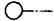
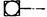
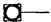
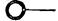
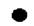
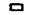
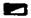
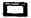
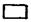
Рис. 1. Схема геодезического обоснования монтажа оборудования стана 900/630:
1 - ось ролика первого загрузочного рольганга; 2 - ось рольганга выдачи; 21 - выносная ось рольганга выдачи; 3 - ось загрузочного стеллажа 1; 4 - ось ролика натягивания; 5 - ось загрузочного стеллажа 2; 6 - ось загрузочного рольганга; 7 - ось ролика 1 рольганга выдачи; 8 - ось рольганга клети; 9 - ось печи 2; 10 - ось двигателя; 11 - ось печи 1; 12 - ось стана; 13 - ось реверсивной клети; 14 - ось подводящего и пакетирующего рольганга; 15 - ось ножниц аварийной резки; 16 и 18 - ось тихоходного вала; 17 - ось кантователя; 19 - ось вертикальной клети; 20 - ось привода с ведущим валом; 21 - ось горизонтальной клети; 23 - ось вертикальной клети; 25 - ось горизонтальной клети; 27 - ось поводковой клети; 29 - ось летучих ножниц; 31 - ось надвижной стрелки; 33 - ось клеймовочного устройства 1; 35 - ось клеймовочного устройства 2; 37 - ось ролика 10; 39 - ось шагового холодильника 1; 41 - ось шагового холодильника 2; 43 - ось шагового холодильника 3
Рис. 2. Закладные элементы в фундаментах для выверки оборудования:
а и г - рабочие плашка и репер, закладываемые после бетонирования фундамента; б и в - тоже, заложенные в фундамент и приваренные к арматуре до бетонирования фундамента; 1 - цементно-песчаный раствор; 2 - основные оси
Рис. 3. Плашка с репером, вынесенные на отдельный фундамент
12. Конструкция плашек и реперов показана на рис. 2 и 3. Закладные элементы при установке необходимо приваривать к арматуре или пластине.
13. Нанесение на плашках осей производится путем кернения после бетонирования фундаментов и вынесения осей.
Отклонение при нанесении керна, обозначающего ось на плашке, допускается в пределах 1 мм, а точность нивелировки высотной отметки репера - в пределах 0,5 мм.
Маркировку плашек и реперов, а также высотные отметки наносят на исполнительную схему, по которой сдают фундаменты для монтажа оборудования.
1. Оборудование следует выверять руководствуясь требованиями инструкций по выверке прокатного оборудования методом оптических измерений с помощью геодезических и оптических приборов.
Предварительная выверка по высоте
2. Последовательность выверки:
нивелирование пакетов подкладок до установки машины;
нивелирование базовой поверхности машины, установленной на фундаменте на подкладках (на отжимных винтах или на дистанционных шайбах при бесподкладочном методе монтажа).
3. Порядок работы:
устанавливают нивелир так, чтобы была видимость на репер и базовую поверхность машины;
устанавливают рейку на репер и берут отсчет по рейке;
вычисляют горизонт инструмента;
вычисляют по рейке отсчет, соответствующий проектной отметке базовой поверхности.
4. Регулировкой высоты пакета подкладок (вращением отжимных винтов или дистанционных гаек на фундаментных болтах) добиваются, чтобы по рейке, установленной в любой точке базовой поверхности, при наблюдении был отсчет, соответствующий проектному положению машины.
Выверка в плане
5. В зависимости от вида оборудования, расположения базовых поверхностей или базовых точек выверяют в плане одним из двух способов: прямого визирования или бокового створа.
Способ прямого визирования применяют, если на машине обозначена (или есть возможность обозначить) двумя точками ось машины. Способ бокового створа применяют, если базовые поверхности находятся в стороне от оси машины.
6. Порядок работы при выверке способом прямого визирования (рис. 1):
обозначают четко видимыми знаками ось машины;
устанавливают теодолит на оси и ориентируют зрительную трубу по оси, выставляют и закрепляют стационарную визирную марку;
перемещением машины добиваются совмещения изображения осевых знаков машины с серединой биссектора сетки нитей зрительной трубы.
7. Порядок работы при выверке способом «бокового створа» (см. рис. 2):
устанавливают теодолит над закрепленным осевым знаком, ориентируя зрительную трубу с отсчетом 50 на барабане микрометра в направлении оси, и закрепляют стационарную визирную марку;
устанавливают линейку с магнитным основанием на первую точку выверяемой поверхности;
Рис. 1. Схема выверки оборудования в плане способом «прямого визирования»:
1 - теодолит; 2 - осевой знак машины; 3 - стационарная визирная марка
Рис. 2. Схема выверки оборудования в плане способом «бокового створа»:
1 - теодолит; 2 - магнитное основание; 3 - точки выверки на базовой поверхности; 4 - стационарная визирная марка; 5 - линейка с пятой; 6 - основание машины; а, ао - соответственно измеряемое и проектное расстояние от оси машины до выверяемой базовой поверхности; т - высота сердечника магнитного основания (указана на кожухе); п - толщина пятки линейки (указана на пятке); l - отсчет по линейке; с - расстояние от оси машины до оси визирования по проекту
наводят перекрестие сетки зрительной трубы теодолита на линейку и записывают отсчет по линейке;
вращением маховичка отсчетного барабана совмещают изображение младшего штриха линейки с серединой биссектора сетки нитей и записывают отсчет;
вычисляют отсчет по линейке в миллиметрах.
Расстояние от оси машины до выверяемой поверхности а, мм вычисляют по формуле:
а = l + (m + n) + c,
где l - отсчет по линейке;
т - высота сердечника магнитного основания (указана на кожухе);
п - толщина пятки линейки (указана на пятке);
с - расстояние от оси машины до оси визирования.
Полученное значение а сравнивают с заданным по проекту ао;
перемещением машины добиваются равенства проектного размера и полученного вычислением;
переставляют линейку на все последующие точки выверяемой поверхности и вычисляют значения в аналогичном порядке.
Допускаемые отклонения в точках не более 0,1 мм (2 деления барабана) на 1 м.
8. При выверке в плане большого количества валов для облегчения и ускорения работ применяют специальное приспособление (призму, устанавливаемую на цилиндрические поверхности, с закрепленными на ней двумя уровнями и двумя линейками для отсчетов).
Выверка на горизонтальность
9. На горизонтальность выверяют одновременно с затяжкой фундаментных болтов.
10. Устанавливают нивелир так, чтобы точки установки реек находились от него примерно на равном расстоянии или с отклонением не более 0,2 м, определяют горизонт инструмента и вычисляют отсчет по рейке.
11. Порядок выверки:
11.1. устанавливают рейку на выверяемую базовую поверхность вблизи фундаментного болта, на котором будет затягиваться гайка;
11.2. при затяжке гайки следят по рейке за осадкой машины; при отсчете, равном вычисленному, и полной затяжке гайки фундаментного болта затяжку прекращают;
11.3. выполняют действия, предусмотренные п. 9.1 и 9.2, у остальных фундаментных болтов машины;
11.4. по окончании затяжки всех фундаментных болтов проводят нивелирование с двух станций;
11.5. сравнивают в каждой точке превышения, полученные при измерениях с I и II станций, выводят среднее для каждой точки и вычисляют отметки точек. Полученные отметки сравнивают с проектной; результаты сравнения должны удовлетворять допускам, приведенным в табл. 4.
Выверка на соосность (вертикальность и параллельность)
12. Для выверки применяют теодолит с оптическим микрометром и плоскопараллельной пластиной, линейки на магнитном основании и стационарную визирную марку.
13. Выверку выполняют способом «бокового створа» при двух положениях круга, за окончательный результат принимают среднее из двух измерений. Порядок выверки аналогичен порядку, указанному в п. 7 настоящего приложения.
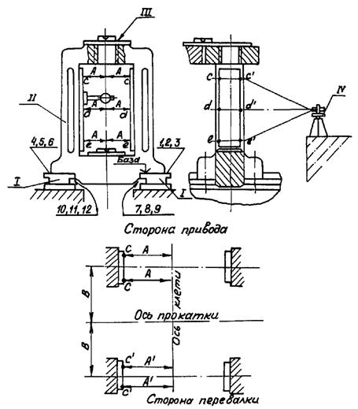
Схема выверки станин с помощью геодезических приборов:
I - плитовины; II - станины клети; III - поверочная линейка и уровень, IV - теодолит; сс¢; дд¢; ее¢ - точки измерения; А, А¢ - результаты измерения; 1-12 - точки проверки щупом прилегания станин к плитовинам
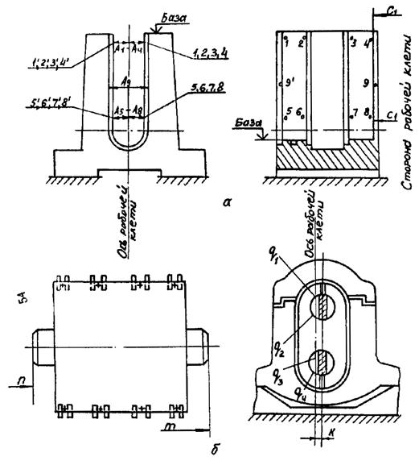
Схема выверки шестеренкой клети:
а - выверка станины; б - выверка клети в сборе; 1-9 и 1¢-9¢ - точки измерения размеров; А1-А9 - размеры окон станины, С1, С2 - размеры от оси рабочей клети; п, т - размеры от оси прокатки; q1-q4 - размеры от оси рабочей клети до стенки лопасти; k - размер между осями рабочей и шестеренной клетей
1. В соответствии с ВСН 361-85 при «бесподкладочном» способе установки технологического оборудования прокатных станов в качестве временных опорных элементов применяют регулировочные винты по ОСТ 24.835.01-76, установочные гайки фундаментных болтов, инвентарные домкратные устройства, удаляемые после подливки.
2. При установке и выверке оборудования с помощью регулировочных винтов под каждый винт укладывают опорные металлические пластины. Места расположения пластин на фундаменте выравнивают с отклонением от горизонтальности не более 10 мм на 1 м.
При установке оборудования на фундаменты регулировочные винты должны выступать ниже опорной поверхности оборудования на одинаковую величину в пределах 10-30 мм.
После выведения оборудования в проектное положение, прилегание сферической головки регулировочных винтов к опорным пластинам проверяют щупом толщиной 0,1 мм и фиксируют их положение стопорными гайками. Перед окончательной затяжкой фундаментных болтов (после подливки) регулировочные винты должны быть вывернуты на 1-3 оборота, либо полностью, а отверстия в опорной части оборудования заглушены пробками или цементным раствором.
3. Для выверки оборудования на установочных гайках используют фундаментные болты диаметром до 36 мм с удлиненной резьбой (не менее 6 диаметров болта). Выверка может производиться как непосредственно установочными гайками, так и с помощью упругих элементов, установленных на гайки.
Перед окончательной затяжкой (после подливки) установочные гайки должны быть опущены на 3-4 мм.
4. Для установки и выверки оборудования с помощью инвентарных домкратных устройств применяют винтовые опоры и домкраты, регулируемые клиновые подкладки, гидравлические домкраты.
После подливки инвентарные домкратные устройства удаляют из-под оборудования.
5. Для возможности удаления инвентарных домкратных устройств и опускания установочных гаек их необходимо перед подливкой выгородить. Образовавшиеся после их удаления пустоты заполняют раствором той марки, которую использовали для подливки.
6. При установке оборудования на пакеты металлических подкладок их суммарная площадь должна составлять не менее 15-кратной площади всех фундаментных болтов, которыми оборудование крепится к фундаменту. Количество подкладок в пакете должно быть не более 5 шт., из них 2-3 установочные, остальные - регулировочные.
В соответствии с рекомендациями ВСН 361-85 размеры установочных подкладок в зависимости от массы машин приведены в табл. 1, а стальных регулировочных подкладок, укладываемых на установочные, - в табл. 2.
В особых случаях материал подкладок может быть оговорен предприятием-изготовителем оборудования.
7. Установочные подкладки следует укладывать на выровненные участки поверхности фундамента, причем размеры участка должны превышать размеры подкладок не менее чем на 25 мм с каждой стороны.
Литые, строганые или вырезанные из листовой стали установочные подкладки должны быть плоские, ровные, без заусенцев.
8. Высоту пакета подкладок подбирают по высоте слоя подливки с превышением на 1-2 мм, учитывая осадку пакета после затяжки фундаментных болтов. При выверке оборудования на клиновых подкладках последние укладывают на 1-2 установочные подкладки и высоту пакета подбирают с занижением на 2-3 мм от проектной отметки низа основания машины для возможности подъема машины в проектное положение подбивкой верхнего клина. Длина клиновых подкладок должна быть больше длины установочных.
Таблица 1
|
Установочная подкладка |
||
|
размеры, мм |
материал |
|
|
До 30 |
150´100´5 |
Сталь |
|
150´100´10 |
» |
|
|
150´100´20 |
» |
|
|
150´100´30 |
Чугун или сталь |
|
|
От 30 до 100 |
200´100´20 |
» |
|
200´100´30 |
» |
|
|
200´100´50 |
» |
|
|
Более 100 |
250´120´40 |
Чугун |
|
250´120´60 |
» |
|
|
250´120´80 |
» |
|
Таблица 2
|
Ширина, мм |
Толщина, мм |
Площадь, см2 |
|
|
200 |
100 |
0,5-5 |
200 |
|
120 |
70 |
1; 3; 5 |
84 |
|
100 |
50 |
1; 3; 5 |
50 |
Клиновые подкладки должны быть стальные, строганые или вырезанные из клинового профиля с уклоном 3-4° (0,05-0,1).
9. Закрепление к фундаментам оборудования, установленного «бесподкладочным способом», производится в два этапа.
Предварительное закрепление оборудования в проектном положении необходимо производить, затягивая гайки фундаментных болтов, расположенных вблизи регулировочных устройств, с усилием 100-120Н при применении стандартных ключей
Окончательное закрепление оборудования производится после подливки и достижения ее прочности не менее 70 % проектной.
10. Закрепление оборудования, установленного на пакеты подкладок, производится в один этап, сразу же после выверки, на проектное усилие затяжки. Стальные подкладки в пакетах прихватываются между собой электросваркой.
11. Окончательная затяжка гаек фундаментных болтов должна производиться равномерно, в два - три «обхода», начиная с болтов, расположенных на осях симметрии опорной части, постепенно переходя к крайним болтам.
12. Величина усилия затяжки гаек фундаментных болтов должна быть указана в технической документации предприятий-изготовителей. При отсутствии таких указаний, величины крутящих моментов при затяжке гаек следует принимать согласно рекомендациям СН 471-75.
После завершения пусконаладочных работ и испытания оборудования затяжку гаек фундаментных болтов необходимо проверить и при необходимости подтянуть до проектного усилия.
Выбор инструмента для затяжки гаек фундаментных болтов и контроля усилия затяжки производится в соответствии с рекомендациями ВСН 361-85.
13. При работе оборудования со значительными динамическими нагрузками гайки болтов должны предохраняться от самоотвинчивания путем их стопорения. Способ стопорения должен быть указан в технической документации на оборудование.